<!doctype html>
<html lang="en">
<head>
  <meta charset="utf-8">
  <meta name="viewport" content="width=device-width, initial-scale=1">
  <title>arxiv digest — 2026-06-16</title>
  <style>
:root {
  --bg: #ffffff;
  --fg: #1f2328;
  --muted: #59636e;
  --border: #d0d7de;
  --card: #f6f8fa;
  --link: #0969da;
}
body {
  max-width: 980px;
  margin: 0 auto;
  padding: 2rem 1rem 5rem;
  font-family: -apple-system, BlinkMacSystemFont, "Segoe UI", Helvetica, Arial, sans-serif;
  line-height: 1.55;
  color: var(--fg);
  background: var(--bg);
}
a { color: var(--link); }
img { max-width: 100%; height: auto; }
pre, code { background: var(--card); border-radius: 6px; }
pre { padding: 1rem; overflow-x: auto; }
blockquote { border-left: 4px solid var(--border); padding-left: 1rem; color: var(--muted); }
details { margin: 0.6rem 0; }
summary { cursor: pointer; font-weight: 600; }
.paper-figures-scroll {
  display: flex;
  gap: 1rem;
  overflow-x: auto;
  overscroll-behavior-x: contain;
  padding: 0.75rem 0.25rem 1rem;
  margin: 1rem 0 1.25rem;
  border-top: 1px solid var(--border);
  border-bottom: 1px solid var(--border);
  scroll-snap-type: x proximity;
}
.paper-figure-card {
  flex: 0 0 min(260px, 72vw);
  scroll-snap-align: start;
  background: var(--card);
  border: 1px solid var(--border);
  border-radius: 12px;
  padding: 0.55rem;
}
.paper-figure-card img {
  display: block;
  width: 100%;
  max-height: 240px;
  object-fit: contain;
  background: white;
  border-radius: 8px;
}
.paper-figure-caption {
  display: block;
  margin-top: 0.5rem;
  color: var(--muted);
  font-size: 0.85rem;
}
.figure-strip-hint {
  color: var(--muted);
  font-size: 0.9rem;
  margin-bottom: -0.3rem;
}
</style>
  <!-- MathJax: renders $...$ inline math and $$...$$ display math, plus
       \(...\) and \[...\]. Loaded from the official CDN; works offline
       once cached. Configured to skip code/pre blocks so arxiv IDs that
       look like dollar amounts don't get mangled. -->
  <script>
    window.MathJax = {
      tex: {
        inlineMath: [['$', '$'], ['\\(', '\\)']],
        displayMath: [['$$', '$$'], ['\\[', '\\]']],
        processEscapes: true,
        processEnvironments: true
      },
      options: {
        skipHtmlTags: ['script', 'noscript', 'style', 'textarea', 'pre', 'code'],
        ignoreHtmlClass: 'tex2jax_ignore',
        processHtmlClass: 'tex2jax_process'
      }
    };
  </script>
  <script id="MathJax-script" async
    src="https://cdn.jsdelivr.net/npm/mathjax@3/es5/tex-chtml.js"></script>
</head>
<body>
<header style="background-color: #333; color: white; padding: 15px; margin-bottom: 20px;">
  <h1 style="margin: 0; font-size: 24px;">
    <a href="https://ochelpan.github.io/arXiv_clean/" style="color: white; text-decoration: none;">Main</a>
  </h1>
</header>

<h1>Daily arXiv Report</h1>

<hr>
<p>
<a href="index.html">← Index</a>
 · <a href="papers_02.html">← Previous</a> · <a href="papers_04.html">Next →</a>
</p>
<hr>

<h2>Papers 41–60</h2>
<p><a id="paper-2606.15481"></a></p>
<h3 id="connecting-entanglement-growth-with-local-integrals-of-motion-in-the-disordered-fermi-hubbard-model"><a href="http://arxiv.org/abs/2606.15481v1">Connecting entanglement growth with local integrals of motion in the disordered Fermi-Hubbard model</a></h3>
<p><strong>Authors:</strong> Ahad Nokhostin Helm, Brandon Leipner-Johns, Rachel Wortis<br>
<strong>Type:</strong> theory · <strong>Category:</strong> strongly correlated electrons · <strong>PDF:</strong> <a href="https://arxiv.org/pdf/2606.15481v1">https://arxiv.org/pdf/2606.15481v1</a><br>
<strong>Analysis basis:</strong> full PDF text, analyzed in chunks
<strong>Topic relevance:</strong> 🔥 <code>entanglement &amp; information structure</code> <strong>4/5</strong> · <code>analog quantum simulation</code> <strong>3/5</strong> · <code>non-equilibrium dynamics</code> <strong>2/5</strong> · <code>Keldysh / 2PI / non-Gaussian methods</code> <strong>1/5</strong> · <code>methods for driven-dissipative</code> <strong>1/5</strong> · <code>non-equilibrium universality</code> <strong>1/5</strong></p>
<div class="figure-strip-hint">↔ Scroll figures horizontally</div>
<div class="paper-figures-scroll">
<figure class="paper-figure-card">
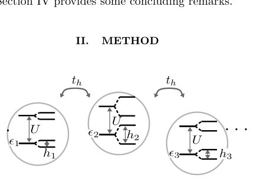
<figcaption class="paper-figure-caption"><b>Fig 1.</b> FIG. 1. A schematic diagram of the disordered Hubbard model showing three sites each with on-site Coulomb repul- sion U, site potential ϵi, and local magnetic field hi, as well as inter-site hopping th.</figcaption>
</figure>
<figure class="paper-figure-card">
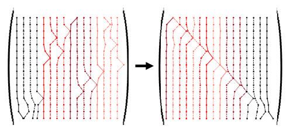
<figcaption class="paper-figure-caption"><b>Fig 2.</b> FIG. 2. Graphical representation of a Q matrix showing the re-ordering of the columns. Each line represents one column. The horizontal displacement of the nth dot in the mth line represents the magnitude of the element Qnm. On the left is the matrix before the Hungarian algorithm is applied, and on the right is the matrix after optimization.</figcaption>
</figure>
<figure class="paper-figure-card">
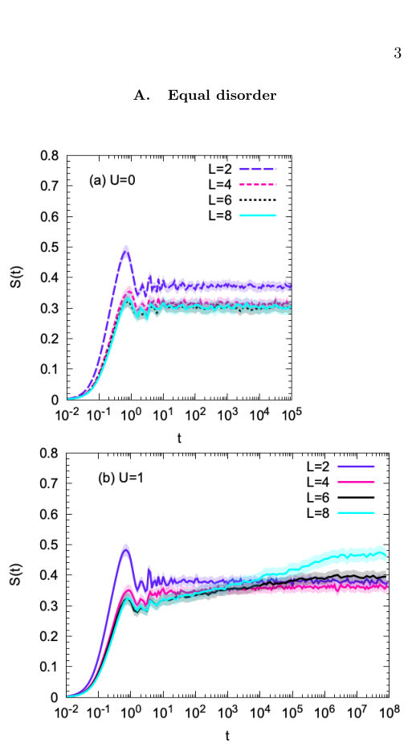
<figcaption class="paper-figure-caption"><b>Fig 3.</b> FIG. 3. Entanglement entropy S(t) vs log(t) calculated using the full Hamiltonian Hexact (a) non-interacting U = 0 and (b) interacting U = 1. The disorder strength is equal in charge and spin: Wch = Wsp = 16. System sizes L = 2, 4, 6, 8. Results are averaged over 2000 disorder configurations and initial states for L = 2, 1800 for L = 4, 1600 for L = 6, and 1000 (U = 0) and 1500 (U = 1) for L = 8.</figcaption>
</figure>
<figure class="paper-figure-card">

<figcaption class="paper-figure-caption"><b>Fig 4.</b> Fig. 3 shows the entanglement entropy obtained from the full Hamiltonian with strong disorder in both charge and spin. For U = 0, the entanglement has a rapid ini- tial rise to a peak at a time of order one, followed by a dip and then saturation. This behaviour is consistent with results in single-component systems. The reason for this structure can be understood by considering a single particle initially placed at one site. Without in- teractions, up and down spins are independent and An- derson localized. The particle’s wavefunction is a super- position of the set of localized single-particle eigenstates which have nonzero overlap with the site on which it is initially placed. As time...</figcaption>
</figure>
<figure class="paper-figure-card">
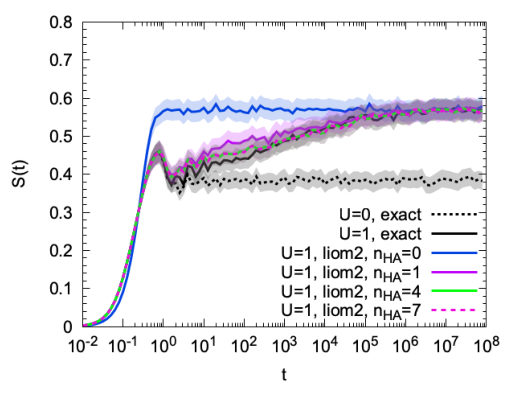
<figcaption class="paper-figure-caption"><b>Fig 5.</b> FIG. 5. Entanglement entropy S(t) vs log(t) calculated using the full Hamiltonian Hexact (black) and the LIOM Hamilto- nian keeping only up to 2nd-order terms Hliom2 where the LIOM are generated using a Q matrix with columns in ran- dom order (blue), optimized to one digit (purple), to four dig- its (green), and to seven digits (pink). Here Wch = Wsp = 16, L = 6, and results are averaged over (the same) 1000 disorder configurations all with the initial condition |↑↓↑↓↑↓⟩.</figcaption>
</figure>
</div>

<p><strong>Summary.</strong> This paper analyzes entanglement growth in the disordered Fermi-Hubbard model by expanding the Hamiltonian using Local Integrals of Motion (LIOMs). The key finding is that when charge and spin disorder are unequal, the system exhibits sequential entanglement buildup dominated first by charge dynamics and later by spin dynamics. This method offers a detailed theoretical pathway to disentangle coupled many-body physics into contributions from distinct physical degrees of freedom.</p>
<p><strong>Why it may be interesting.</strong> This work provides a powerful theoretical tool—the LIOM expansion—to dissect complex many-body dynamics into contributions from specific conserved quantities. The ability to separate charge and spin dynamics based on disorder asymmetry is highly relevant for understanding correlated materials where different degrees of freedom might localize or evolve on distinct timescales.</p>
<details>
<summary>Detailed structure</summary>
<p><strong>Main problem.</strong> The study investigates how disorder affects entanglement growth dynamics in interacting quantum systems, specifically by connecting this growth to local integrals of motion (LIOMs). The goal is to understand the distinct contributions of charge and spin degrees of freedom.</p>
<p><strong>Main result.</strong> The analysis reveals that while coupling between charge and spin is generally weaker than intra-species couplings, this decoupling becomes clearly apparent when disorder strengths in the two sectors are unequal. For unequal disorder, entanglement growth exhibits distinct early-time phases dominated sequentially by charge and then spin dynamics.</p>
<p><strong>Method.</strong> The authors employ an advanced theoretical technique involving expanding the Hamiltonian in terms of optimally localized conserved quantities (LIOMs) with separate charge and spin characters. Entanglement entropy is calculated using these LIOM expansions and comparing results from various truncation orders.</p>
<p><strong>Model / system.</strong> The system studied is the disordered Fermi-Hubbard model, which possesses two degrees of freedom per site: charge and spin. The Hamiltonian includes hopping, on-site repulsion ($U$), and disorder potentials applied independently to the charge ($\epsilon_i$) and spin ($h_i$) sectors.</p>
<p><strong>Key observables.</strong> Bipartite von Neumann entanglement entropy $S(t)$, which is tracked as a function of time (or $\log(t)$).</p>
<p><strong>Important parameters / regimes.</strong> Disorder strengths in charge ($ ext{W}<em ext_sp="ext{sp">{    ext{ch}}$) and spin ($ ext{W}</em>$), interaction strength ($U$), and system size ($L$). The comparison between equal vs. unequal disorder regimes is crucial.}</p>
<p><strong>Assumptions / limitations.</strong> The analysis relies on the successful expansion of the full Hamiltonian into a basis of LIOMs, allowing for systematic truncation at different orders (e.g., $   ext{H}<em ext_liom="ext{liom">{    ext{liom}1}$, $ ext{H}</em>$).}2</p>
<p><strong>Figures summary.</strong> Figures illustrate entanglement entropy growth curves comparing exact results against various LIOM truncations; they also show the spatial decay of coupling coefficients and compare dynamics under equal versus unequal disorder conditions.</p>
<p><strong>Paper structure.</strong> The paper systematically introduces the model, develops the mathematical framework using LIOMs to decompose the Hamiltonian, calculates entanglement entropy for different disorder regimes (equal vs. unequal), and compares the results obtained from various orders of approximation in the LIOM expansion.</p>
</details>
<details>
<summary>Abstract</summary>
<p>Generically a quantum system initialized in an unentangled state will, under unitary dynamics, rapidly become entangled, a process closely related to information transport and to thermalization. Disorder can suppress the growth of entanglement and result in memory of initial conditions. In non-interacting systems this arises from localization of single-particle states, the occupancy of which is fixed by the initial condition. In interacting systems similar localized conserved quantities persist, but with the added feature that they are coupled, resulting in entanglement growth which is distinct from both non-interacting localized systems and from generic ergodic systems. The Fermi-Hubbard model has two degrees of freedom per site -- charge and spin -- and disorder may be present in both of these. We study the growth of entanglement in two scenarios -- disorder in charge equal and unequal to that in spin, and determine the distinct contributions of charge and spin degrees of freedom by expanding the Hamiltonian in terms of a set of optimally localized conserved quantities with separate charge and spin character. We find that coupling between charge and spin is significantly weaker than charge-charge and spin-spin coupling. While this decoupling is present in all our results, it is only apparent when the strength of the disorder in the two sectors is different such that there is a separation between the characteristic timescales of the contributions to entanglement made by charge and by spin.</p>
</details>
<p><sub><a href="#top">↑ back to top</a></sub></p>

<p><a id="paper-2606.16704"></a></p>
<h3 id="field-selected-seven-site-topological-magnons-in-a-classical-frustrated-triangular-lattice-k-math350math-math351math-magnet"><a href="http://arxiv.org/abs/2606.16704v1">Field-selected seven-site topological magnons in a classical frustrated triangular-lattice K-$Γ$-$Γ'$ magnet</a></h3>
<p><strong>Authors:</strong> Bin Xi, Jie Lu, Shun-Li Yu, Yafang Xu<br>
<strong>Type:</strong> theory · <strong>Category:</strong> strongly correlated electrons · <strong>PDF:</strong> <a href="https://arxiv.org/pdf/2606.16704v1">https://arxiv.org/pdf/2606.16704v1</a><br>
<strong>Analysis basis:</strong> full PDF text, analyzed in chunks
<strong>Topic relevance:</strong> 🔥 <code>analog quantum simulation</code> <strong>4/5</strong> · 🔥 <code>exotic spin models in light-matter</code> <strong>4/5</strong> · <code>spintronics-quantum-optics interface</code> <strong>3/5</strong> · <code>non-equilibrium dynamics</code> <strong>1/5</strong></p>
<div class="figure-strip-hint">↔ Scroll figures horizontally</div>
<div class="paper-figures-scroll">
<figure class="paper-figure-card">
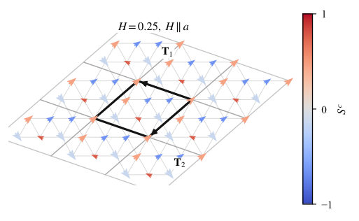
<figcaption class="paper-figure-caption"><b>Fig 1.</b> FIG. 2. The field-selected state is a compact noncoplanar seven-site order. Real-space spin texture at H = 0.25 for H ∥ a, obtained by periodically repeating the magnetic cell used in the spin-wave calculation. The black parallelogram marks one magnetic unit cell, with T1 = (−3, 1) and T2 = (−1, −2) in triangular-lattice coordinates. Arrows show (Sa, Sb) in the crystallographic frame and the color gives Sc.</figcaption>
</figure>
<figure class="paper-figure-card">
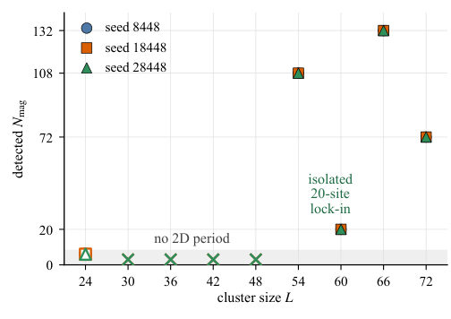
<figcaption class="paper-figure-caption"><b>Fig 2.</b> FIG. 1. Zero-field magnetic-cell detection results at (θ, ϕ) = (0.55π, 1.91π). Detected magnetic-cell size versus cluster size for three independent seeds. Filled markers denote detected two-dimensional finite cells, open markers denote rank-one patterns, and crosses mark clusters where no two-dimensional period is found within the search window. The isolated 20- site cell at L = 60 is a finite-size commensurate lock-in.</figcaption>
</figure>
<figure class="paper-figure-card">
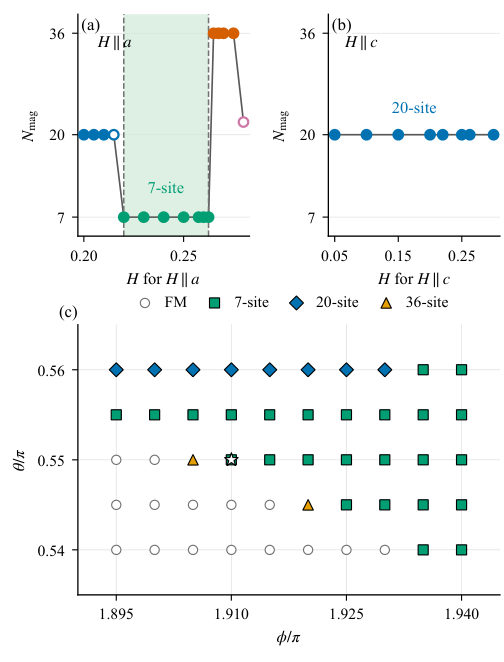
<figcaption class="paper-figure-caption"><b>Fig 3.</b> FIG. 3. Field and parameter diagnostics for the selected seven-site state. (a) Magnetic-cell size selected for H ∥a. Filled (open) markers denote fields where independent seeds agree (split), and the shaded band marks 0.2200 ≤H ≤ 0.2625. (b) Control scan for H ∥c: fields from 0.0500 to 0.3000 remain on a 20-site branch across all three seeds. (c) Single-seed local scan at H = 0.25 and H ∥a. Symbols mark the selected two-dimensional magnetic cell at each sampled parameter point; FM denotes the one-site uniform ferromag- netic branch and the star marks (θ, ϕ) = (0.55π, 1.91π).</figcaption>
</figure>
<figure class="paper-figure-card">
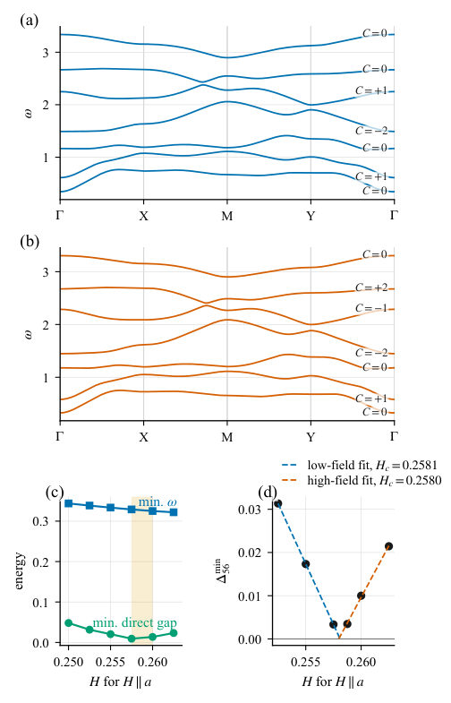
<figcaption class="paper-figure-caption"><b>Fig 4.</b> FIG. 4. The selected seven-site state carries field-tunable magnon Chern numbers. (a) Linear-spin-wave spectrum at H = 0.2500, with Chern vector Clow, and (b) spectrum at H = 0.2600, with Chern vector Chigh. Small labels at the right edge mark the band Chern numbers. Both spec- tra are plotted along the magnetic Brillouin-zone path Γ-X- M-Y -Γ. This path is defined in the reduced coordinates of the seven-site magnetic Brillouin zone, with X = (1/2, 0), M = (1/2, 1/2), and Y = (0, 1/2) in the reciprocal basis of the magnetic supercell. In physical reciprocal coordinates these points are X = (−1/7, 1/14), M = (−3/14, −1/7), and Y = (−1/14, −3/14) modulo reciprocal lattice vectors, dis- tinct...</figcaption>
</figure>
<figure class="paper-figure-card">
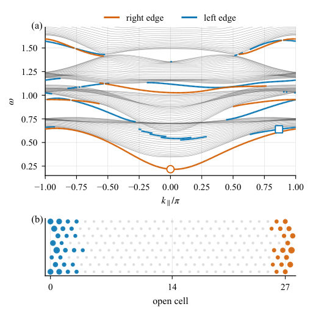
<figcaption class="paper-figure-caption"><b>Fig 5.</b> FIG. 5. Low-energy strip spectrum at H = 0.2500. (a) Strip spectrum versus momentum along the periodic direc- tion. Thin grey lines show strip bands in the plotted energy window; red and blue segments mark states whose weight on the two outermost magnetic cells exceeds 0.35 on opposite boundaries. Open symbols mark the two modes used for the real-space map. (b) Site-resolved magnon weights for repre- sentative left- and right-edge modes on the same strip.</figcaption>
</figure>
</div>

<p><strong>Summary.</strong> The paper investigates topological magnons in a frustrated triangular-lattice magnet by applying an external magnetic field to stabilize a specific seven-site spin order. This state exhibits tunable Chern numbers that undergo a distinct transfer at a critical field strength. The transition is confirmed through changes in band topology, the thermal Hall conductivity, and spectroscopic measurements of the magnon dynamics.</p>
<p><strong>Why it may be interesting.</strong> This work provides a detailed, controlled semiclassical benchmark for observing topological magnon physics in frustrated magnets, linking lattice geometry, external fields, and measurable transport properties like the thermal Hall effect.</p>
<details>
<summary>Detailed structure</summary>
<p><strong>Main problem.</strong> The primary challenge is defining magnon topology (Chern numbers) in strongly frustrated magnets where the zero-field ground state often lacks a stable harmonic vacuum for linear spin-wave theory.</p>
<p><strong>Main result.</strong> Applying an in-plane magnetic field stabilizes a noncoplanar seven-site order, which hosts tunable topological magnon bands exhibiting a clear Chern number transfer at a critical field strength. This transition is observable via the thermal Hall conductivity and the dynamical structure factor.</p>
<p><strong>Method.</strong> The study employs Linear Spin-Wave Theory (LSWT) applied to a classical spin model, using ground state searches combined with band structure calculations on a magnetic unit cell.</p>
<p><strong>Model / system.</strong> The system is a classical frustrated triangular-lattice magnet described by a K-$\Gamma$-$\Gamma'$ nearest-neighbor Hamiltonian. The analysis focuses on the field-selected seven-site ordered state stabilized by an external in-plane magnetic field.</p>
<p><strong>Key observables.</strong> Field-tunable Chern numbers ($C_n$), total thermal Hall conductivity ($\kappa_{xy}(T)$), and the coherent one-magnon dynamical structure factor $S(\mathbf{q}, \omega)$.</p>
<p><strong>Important parameters / regimes.</strong> The magnetic field strength ($H$) is critical, particularly around a transition point $H_c \approx 0.258$. The lattice geometry (triangular) and exchange parameters ($K, \Gamma, \Gamma'$) define the model.</p>
<p><strong>Assumptions / limitations.</strong> The analysis relies on LSWT, which is an approximation; furthermore, zero-field states are deemed insufficient for robust topological characterization due to finite-size effects.</p>
<p><strong>Figures summary.</strong> Figures illustrate the real-space spin texture of the field-selected state, show magnon bands and Chern numbers before and after the transition, and plot $\kappa_{xy}(T)$ demonstrating a near-zero crossing during the transfer region.</p>
<p><strong>Paper structure.</strong> The paper first establishes the necessity of field selection to stabilize a robust magnetic vacuum. It then calculates the topological invariants (Chern numbers) as a function of applied field, detailing the Dirac-like band touching and subsequent Chern vector change. Finally, it analyzes the transport consequences via $\kappa_{xy}(T)$ and confirms spectral weight conservation using the DSF.</p>
</details>
<details>
<summary>Abstract</summary>
<p>Defining magnon topology in strongly frustrated magnets is often hindered by the absence of a simple harmonic magnon vacuum at zero field. Within a classical-spin ground-state search followed by linear spin-wave theory (LSWT), we demonstrate that a representative triangular-lattice K-Gamma-Gamma' model in a dominant-Gamma exchange regime has an in-plane-field-selected compact, noncoplanar seven-site order. This field-selected state provides a controlled classical reference state and hosts magnon bands with field-tunable Chern numbers. Increasing the field drives a Dirac-like band touching that transfers Berry curvature between the fifth and sixth bands, altering the Chern vector from (0, 1, 0, -2, 1, 0, 0) to (0, 1, 0, -2, -1, 2, 0). This topological transition reorganizes the band-resolved thermal Hall conductivity, driving the total $κ_{xy}(T)$ through a near-zero crossing once the upper bands are thermally populated. The dynamical structure factor places roughly half of the coherent spectral weight on the Chern-active branches, offering a spectroscopic route to identify the topological branches. These results define a controlled semiclassical benchmark for magnon topology in this pure nearest-neighbor exchange model.</p>
</details>
<p><sub><a href="#top">↑ back to top</a></sub></p>

<p><a id="paper-2606.14873"></a></p>
<h3 id="finite-element-matrix-product-states-for-continuum-models-in-one-dimension"><a href="http://arxiv.org/abs/2606.14873v1">Finite-Element Matrix Product States for Continuum Models in One Dimension</a></h3>
<p><strong>Authors:</strong> Akshay Shankar, Karel Van Acoleyen, Jutho Haegeman<br>
<strong>Type:</strong> theory · <strong>Category:</strong> numerical methods · <strong>PDF:</strong> <a href="https://arxiv.org/pdf/2606.14873v1">https://arxiv.org/pdf/2606.14873v1</a><br>
<strong>Analysis basis:</strong> full PDF text, analyzed in chunks
<strong>Topic relevance:</strong> 🔥 <code>analog quantum simulation</code> <strong>4/5</strong> · <code>methods for driven-dissipative</code> <strong>3/5</strong> · <code>non-equilibrium dynamics</code> <strong>2/5</strong> · <code>Frenkel-Kontorova</code> <strong>1/5</strong> · <code>Keldysh / 2PI / non-Gaussian methods</code> <strong>1/5</strong> · <code>entanglement &amp; information structure</code> <strong>1/5</strong></p>
<div class="figure-strip-hint">↔ Scroll figures horizontally</div>
<div class="paper-figures-scroll">
<figure class="paper-figure-card">
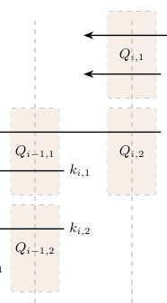
<figcaption class="paper-figure-caption"><b>Fig 1.</b> FIG. 1. Visual schematic of the particle-flow picture with R = 2. The indices ki,r count the particles originating at site i and travel a distance r, while the virtual indices Qi,r count the total particle flow across the boundary between sites i and i + 1 that travel to i −r + 1.</figcaption>
</figure>
<figure class="paper-figure-card">
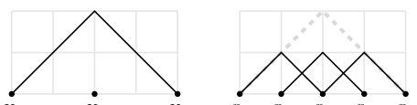
<figcaption class="paper-figure-caption"><b>Fig 2.</b> FIG. 3. Refinement of the tent function basis</figcaption>
</figure>
<figure class="paper-figure-card">
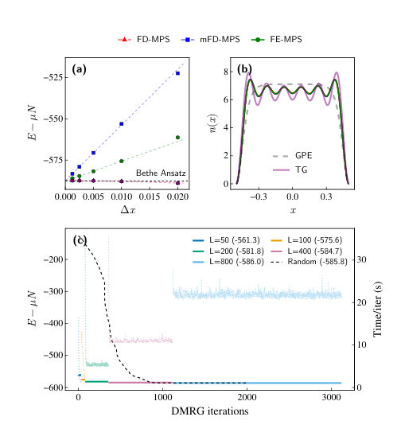
<figcaption class="paper-figure-caption"><b>Fig 3.</b> FIG. 5. Ground state properties and convergence behavior for N = 6 particles in an infinite well of size l = 1 with g = 50 at bond dimension D = 10. (a) Scaling of the ground state energy error with grid spacing ∆x for FD-MPS (red, nc = 2), modified FD-MPS (blue, nc = 1, see Appendix D), and FE-MPS (green, nc = 2). The absolute error of the continuum limit relative to the Bethe ansatz energy is due to small D. (b) Comparison of the spatial density n(x) at the finest resolution (L = 800) against Gross-Pitaevskii (GPE) and Tonks-Girardeau (TG) limits. (c) Energy convergence during DMRG optimization of FE-MPS, demonstrating the performance of the multigrid optimization scheme compared to a...</figcaption>
</figure>
<figure class="paper-figure-card">
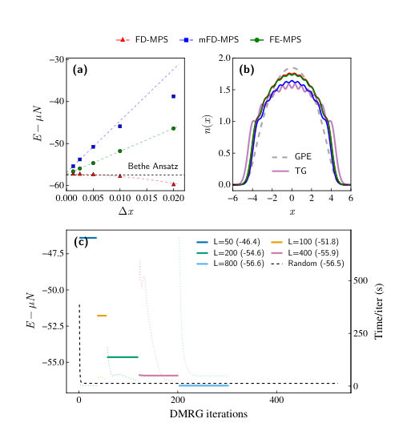
<figcaption class="paper-figure-caption"><b>Fig 4.</b> FIG. 6. Ground state properties and convergence behavior as in Fig. 5, but for N = 12 particles in a harmonic trap with ω = 1 and g = 10 at bond dimension D = 15. (a) Energy convergence with ∆x where we compare against the Bethe ansatz solution using a local density approximation (see Appendix E). (b) Comparison of the spatial density n(x) at L = 800. (c) Energy convergence during DMRG optimization of FE-MPS.</figcaption>
</figure>
<figure class="paper-figure-card">
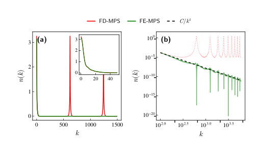
<figcaption class="paper-figure-caption"><b>Fig 5.</b> FIG. 7. Momentum distribution n(k) (see Appendix C 3) for the parameters in Fig. 5 at L = 100. (a) Linear scale com- parison highlighting the agreement between FD-MPS (red) and FE-MPS (green) on IR behavior. The extended k-range demonstrates periodic aliasing artifacts inherent to the FD representation, which are suppressed with the FE basis. In- set: Zoom-in on the low-k regime, showing the identical reso- lution of the bulk density peak. (b) Log-log scale illustrating the UV behavior. FE-MPS recovers the physical k−4 power- law tail [25], while FD-MPS plateaus with periodic behavior. The black dashed line represents the theoretical asymptotic limit C/k4, where the contact C = 4gEint is...</figcaption>
</figure>
</div>

<p><strong>Summary.</strong> The paper introduces Finite-Element Matrix Product States (FE-MPS) as a powerful numerical method for simulating quantum many-body systems in one dimension, bridging the gap between discrete lattice models and continuous field theories. By using FE basis sets, it accurately captures continuum physics, such as momentum tails, while employing generalized DMRG techniques to maintain computational tractability. This allows for high-precision study of interacting gases under complex external potentials.</p>
<p><strong>Why it may be interesting.</strong> This work is highly relevant for AMO physics because it provides a systematic, variational numerical tool to study interacting quantum gases (like Bose or Fermi gases) in complex potentials or geometries where standard lattice approximations fail. The ability to handle continuum physics while maintaining the efficiency of MPS is a major computational advance.</p>
<details>
<summary>Detailed structure</summary>
<p><strong>Main problem.</strong> The core problem is extending quantum many-body simulation techniques, particularly those based on Matrix Product States (MPS), from discrete lattice models to continuous space continuum field theories.</p>
<p><strong>Main result.</strong> The authors successfully recast the variational ground-state search for continuum systems into a generalized eigenvalue problem solvable by modified DMRG algorithms. This framework provides systematic convergence and accurate physical results compared to standard finite-difference methods.</p>
<p><strong>Method.</strong> They employ a Finite-Element (FE) expansion using non-orthogonal single-particle basis sets to discretize the continuum Hamiltonian, which is then represented as an efficient Matrix Product Operator (MPO). The ground state search minimizes energy by solving generalized eigenvalue problems iteratively.</p>
<p><strong>Model / system.</strong> The primary model studied is one-dimensional quantum many-body systems, exemplified by the Lieb-Liniger gas. The physics is governed by a Hamiltonian that includes kinetic terms, external potentials (like harmonic traps or barriers), and contact interactions.</p>
<p><strong>Key observables.</strong> Ground state energy ($E$), spatial density $n(x)$, momentum distribution $n(k)$, and the Single-Particle Density Matrix (SPDM).</p>
<p><strong>Important parameters / regimes.</strong> Grid spacing ($\Delta x$), chemical potential ($\mu$), interaction strength ($g$), and the bond dimension ($\chi$).</p>
<p><strong>Assumptions / limitations.</strong> The method assumes that the many-body overlap operator can be efficiently encoded as an MPO, allowing the use of generalized DMRG. Convergence is limited by non-smooth features (cusps) in the wavefunction, leading to $O(\Delta x)$ energy scaling.</p>
<p><strong>Figures summary.</strong> Figures compare energy and density convergence ($\Delta x$ dependence) for various potentials (infinite well, harmonic trap with barrier), demonstrating FE-MPS's superior variationality and ability to capture correct UV momentum tails ($k^{-4}$) compared to FD-MPS.</p>
<p><strong>Paper structure.</strong> The paper builds conceptually from the general framework of mapping continuum physics onto an auxiliary computational space using FE basis sets. It details the MPO representation of both the Hamiltonian and the overlap operator, outlines the generalized DMRG algorithm, and concludes with rigorous convergence studies and comparisons against exact benchmarks (Bethe Ansatz).</p>
</details>
<details>
<summary>Abstract</summary>
<p>We present a matrix product state framework for simulating one-dimensional quantum many-body systems in the continuum using non-orthogonal single-particle basis sets. By mapping the physical problem to an auxiliary computational space, we show that the resulting many-body overlap operator can be efficiently encoded as a matrix product operator for sufficiently localized orbitals, thereby generalizing a construction that first appeared in [arXiv:2405.10285]. This construction recasts the variational ground-state search into a generalized eigenvalue problem, which can be solved using a generalized density matrix renormalization group algorithm. As a primary application, we employ a first-order finite-element expansion to study the ground state properties of the Lieb-Liniger gas in the presence of inhomogeneities. This approach also provides a natural setting for exactly refining the lattice, thereby enabling multigrid optimization strategies for matrix product states.</p>
</details>
<p><sub><a href="#top">↑ back to top</a></sub></p>

<p><a id="paper-2606.15711"></a></p>
<h3 id="mapping-the-stability-of-spin-qubits-in-superconducting-pseudogap-systems"><a href="http://arxiv.org/abs/2606.15711v1">Mapping the Stability of Spin Qubits in Superconducting Pseudogap Systems</a></h3>
<p><strong>Authors:</strong> Chen-How Huang, Miguel A. Cazalilla<br>
<strong>Type:</strong> theory · <strong>Category:</strong> quantum information and computing · <strong>PDF:</strong> <a href="https://arxiv.org/pdf/2606.15711v1">https://arxiv.org/pdf/2606.15711v1</a><br>
<strong>Analysis basis:</strong> full PDF text, analyzed in chunks
<strong>Topic relevance:</strong> 🔥 <code>Kondo &amp; dissipative impurity</code> <strong>4/5</strong> · <code>spintronics-quantum-optics interface</code> <strong>2/5</strong> · <code>Keldysh / 2PI / non-Gaussian methods</code> <strong>1/5</strong> · <code>analog quantum simulation</code> <strong>1/5</strong> · <code>correlated / nonlocal dissipation</code> <strong>1/5</strong> · <code>driven-dissipative phase transition</code> <strong>1/5</strong> · <code>exotic spin models in light-matter</code> <strong>1/5</strong> · <code>methods for driven-dissipative</code> <strong>1/5</strong></p>
<div class="figure-strip-hint">↔ Scroll figures horizontally</div>
<div class="paper-figures-scroll">
<figure class="paper-figure-card">
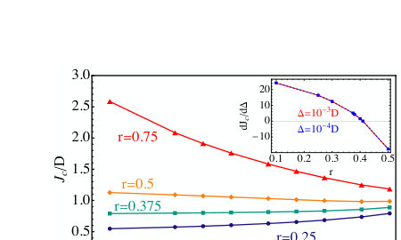
<figcaption class="paper-figure-caption"><b>Fig 1.</b> FIG. 2. Dependence of the critical Kondo coupling Jc on the strength of the (s-wave) pairing potential ∆/D (D is the sys- tem bandwidth) at particle-hole symmetry (i.e. V = µ = 0). Note that for r = 0.75, larger ∆favors a singlet ground state. Inset: Slope of the critical J, i.e. dJc/d∆vs. pseudogap ex- ponent r. Notice the sing change for r ≃0.4.</figcaption>
</figure>
</div>

<p><strong>Summary.</strong> This paper theoretically investigates spin qubits embedded in superconductors with a pseudogap. By using advanced renormalization group techniques, the authors map out the phase diagram governing the transition between stable doublet and singlet ground states. The key finding is that tailoring the superconducting host's pseudogap structure can significantly enhance qubit stability at high coupling strengths.</p>
<p><strong>Why it may be interesting.</strong> This work directly addresses fundamental issues in superconducting quantum computing by providing theoretical guidelines on how material properties (like the pseudogap structure) can be engineered to enhance qubit coherence and stability against decoherence mechanisms.</p>
<details>
<summary>Detailed structure</summary>
<p><strong>Main problem.</strong> The study maps how modifying the superconducting host's pseudogap structure affects the stability of spin qubits realized as Yu-Shiba-Rusinov states.</p>
<p><strong>Main result.</strong> Coupling to superconductors with large pseudogap exponents enhances qubit stability at large Kondo coupling, suggesting a route to engineer resilient quantum bits.</p>
<p><strong>Method.</strong> The analysis employs effective field theory and numerical renormalization group (NRG) techniques to map the phase diagram of the system's ground state.</p>
<p><strong>Model / system.</strong> The model involves a quantum dot spin coupled to a superconductor exhibiting a pseudogap tunneling density of states, $
ho(\epsilon) \sim |\epsilon|^r$. The physics is governed by Kondo coupling ($J$) and superconducting pairing ($\Delta$).</p>
<p><strong>Key observables.</strong> The stability transition between the spin doublet and singlet ground state, characterized by the critical Kondo coupling $J_c$, and the energy gap between these two states.</p>
<p><strong>Important parameters / regimes.</strong> Pseudogap exponent ($r$), Kondo coupling strength ($J$), superconducting gap ($\Delta$), and particle-hole symmetry breaking perturbations ($V$ or $\mu$).</p>
<p><strong>Assumptions / limitations.</strong> The analysis assumes a constant $s$-wave pairing potential $\Delta$ and utilizes effective actions derived from integrating out host degrees of freedom.</p>
<p><strong>Figures summary.</strong> Figure 1(a) shows the phase diagram mapping doublet vs. singlet regions based on $J_c/D$ for varying $r$, $V$, and $\mu$. Figure 1(b) illustrates how the energy gap between the two states closes as $r$ increases.</p>
<p><strong>Paper structure.</strong> The paper systematically analyzes the ground state phase diagram using RG flow, first examining weak coupling regimes, then analyzing the large Kondo coupling limit by considering Andreev reflection's role in stabilizing different singlet phases based on the pseudogap exponent $r$.</p>
</details>
<details>
<summary>Abstract</summary>
<p>Superconducting spin qubits, realized as Yu-Shiba-Rusinov spin-doublet states in quantum-dot-superconductor systems, represent a cornerstone of current research in quantum technologies. We analyze these ground states of quantum impurities in superconducting pseudogap systems, namely systems with a pseudogap tunneling density of states $ρ(ε) \sim |ε|^r$ for energies $|ε|\gg Δ$ ($Δ$ being a $s$-wave pairing potential). For $r=1$, these hosts are realized as Dirac materials (graphene or 3D topological insulator surfaces) in proximity to conventional superconductors, or as $d+i s$ superconductors. Using effective field theory and numerical renormalization group, we map the phase diagram against the pseudogap exponent $r > 0$ and particle-hole symmetry-breaking perturbations. At particle-hole symmetry, increasing $r$ also increases the critical value, $J_c$, of the Kondo coupling that triggers the transition from spin doublet to singlet. Unlike the gapless pseudogap Kondo systems, numerical and analytical evidence suggest that Andreev reflection stabilizes a singlet ground state at $J$ for all $r > 0$. Breaking particle-hole symmetry -- by potential scattering or chemical potential -- eventually restores the transition at lower $J_c$. Our results indicate that coupling to superconducting hosts with large pseudogap exponents enhances the stability of spin qubits at large Kondo coupling.</p>
</details>
<p><sub><a href="#top">↑ back to top</a></sub></p>

<p><a id="paper-2606.16375"></a></p>
<h3 id="scalable-graph-state-generation-with-o1-local-feedforward-in-quantum-networks"><a href="http://arxiv.org/abs/2606.16375v1">Scalable Graph State Generation with O(1) Local Feedforward in Quantum Networks</a></h3>
<p><strong>Authors:</strong> Xiaoyi Zheng, Chan-Tong Lam, Lin Chen, Zheng Xing<br>
<strong>Type:</strong> both · <strong>Category:</strong> quantum information and computing · <strong>PDF:</strong> <a href="https://arxiv.org/pdf/2606.16375v1">https://arxiv.org/pdf/2606.16375v1</a><br>
<strong>Analysis basis:</strong> full PDF text, analyzed in chunks
<strong>Topic relevance:</strong> 🔥 <code>QC/QI experiment</code> <strong>4/5</strong> · <code>quantum measurements</code> <strong>3/5</strong> · <code>measurement-induced transitions</code> <strong>2/5</strong> · <code>entanglement &amp; information structure</code> <strong>1/5</strong> · <code>methods for driven-dissipative</code> <strong>1/5</strong> · <code>non-equilibrium dynamics</code> <strong>1/5</strong></p>
<div class="figure-strip-hint">↔ Scroll figures horizontally</div>
<div class="paper-figures-scroll">
<figure class="paper-figure-card">
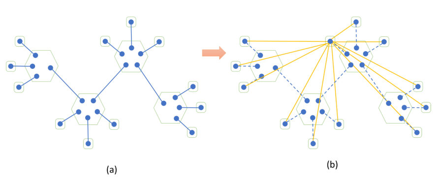
<figcaption class="paper-figure-caption"><b>Fig 1.</b> FIG. 1. Protocol Architecture and Topology Evolution. (a) Initial Resource State. The blue lines represent Bell states. Relay nodes (hexagons) are linearly connected via Bell states, and each terminal node (square) shares a Bell state with its nearest relay node. (b) Target Graph State. The final star-shaped graph (yellow edges represent CZ connections). The topology center is arbitrarily specified, and the final graph only contains terminal nodes; all relay nodes are no longer present in the final graph after measurement.</figcaption>
</figure>
<figure class="paper-figure-card">
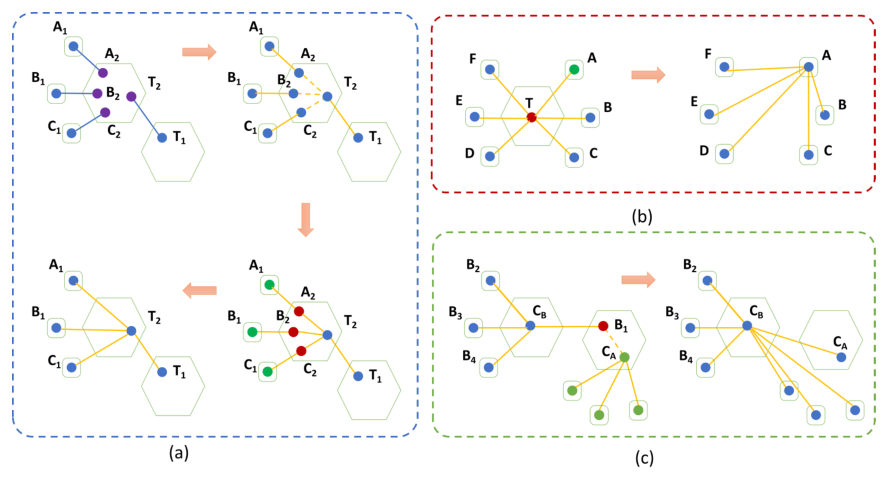
<figcaption class="paper-figure-caption"><b>Fig 2.</b> FIG. 2. Core topological operations governing graph state evolution. (a) Protocol 1: Subgraph Generation. Relay nodes (hexagons) transform pre-shared Bell pairs (blue lines) into star-shaped subgraphs centered on qubit T2 via local Hadamard gates (purple), CZ operations (yellow lines), and X-measurements (red). (b) Protocol 2: Center Transformation. Dynamic migration of the topological center from node T to A is achieved by measuring T (red) and applying conditional corrections on A (green), without consuming additional entanglement. (c) Protocol 3: Star Fusion. Two independent stars GA and GB are merged by entangling center CA with bridge node B1, followed by the measurement of B1. This...</figcaption>
</figure>
<figure class="paper-figure-card">
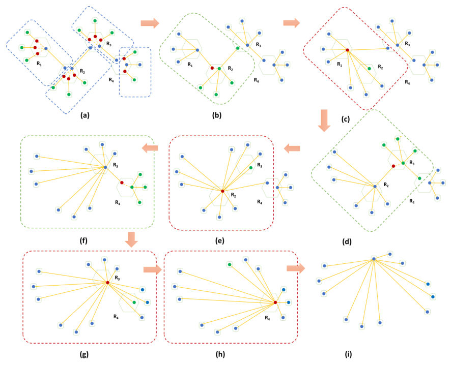
<figcaption class="paper-figure-caption"><b>Fig 3.</b> FIG. 3. End-to-end workflow for scalable star graph construction. (a) Parallel Initialization: Simultaneous execution of Protocol 1 by all relay nodes to form local subgraphs (blue boxes). (b) Initial Fusion: Protocol 3 merges the first two subgraphs via bridge node measurement (green box). (c) Center Migration: Protocol 2 shifts the center to a new relay node (red box). (d)-(g) Iterative Expansion: Alternating execution of fusion and migration protocols progressively expands the topology. (h)-(i) Finalization: The final center is designated among terminal nodes, and all remaining relay nodes are decoupled, yielding the target user-plane star graph (i).</figcaption>
</figure>
<figure class="paper-figure-card">
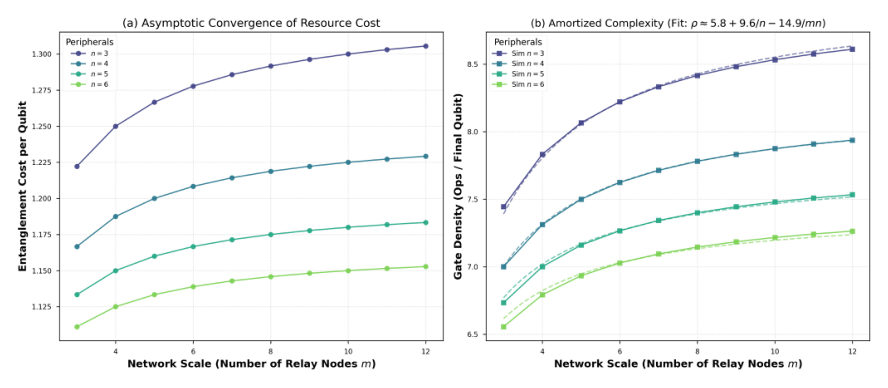
<figcaption class="paper-figure-caption"><b>Fig 4.</b> FIG. 4. Resource Utilization. (a) The entanglement cost per qubit, Cent, matches the prediction of the analytical formula (Eq. 4) and converges to the asymptotic limits ≈1.33 (n = 3) and ≈1.16 (n = 6). (b) The gate density exhibits a bounded saturation mode, highly matching the prediction of the model ρ ≈cbase +coverhead/n−ccorr/mn (dashed line). This confirms the existence of initialization overhead at small scales, but the control complexity asymptotically saturates to a constant, thus verifying the amortized O(1) scalability.</figcaption>
</figure>
<figure class="paper-figure-card">
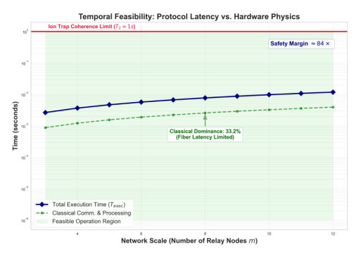
<figcaption class="paper-figure-caption"><b>Fig 5.</b> FIG. 5. Temporal Feasibility. The red solid line indicates the 1.0 s coherence limit of 171Yb+ memory qubits. The dark blue solid line represents the total execution time of the protocol, and the green dashed line represents the latency caused by classical communication and processing. Simulation results show that the security margin is ≈80×, and classical communication time accounts for approximately 33% of the total latency. This indicates that the protocol operates under low-latency conditions.</figcaption>
</figure>
</div>

<p><strong>Summary.</strong> This paper introduces a scalable protocol for generating high-fidelity graph states in quantum networks using a dual-species trapped-ion platform. By employing local measurements and classical feedforward with O(1) complexity, it bypasses latency bottlenecks associated with global synchronization. Furthermore, the integration of erasure conversion significantly boosts fidelity, paving a path toward fault-tolerant distributed quantum computing.</p>
<p><strong>Why it may be interesting.</strong> It provides concrete, hardware-aware protocols that directly address the time/fidelity trade-off in quantum networking, which is crucial for scaling up distributed quantum computation architectures built on trapped ions.</p>
<details>
<summary>Detailed structure</summary>
<p><strong>Main problem.</strong> The primary challenge is generating large-scale, high-fidelity graph states in quantum networks while overcoming decoherence limitations imposed by finite coherence times.</p>
<p><strong>Main result.</strong> The authors propose a low-latency protocol achieving amortized O(1) decision complexity, which maintains high fidelity even for large networks through error mitigation techniques like erasure conversion.</p>
<p><strong>Method.</strong> The protocol relies on local measurements and classical feedforward, simplifying complex state evolution by exploiting the condition that measured qubit neighborhoods form an independent set. It combines iterative subgraph fusion with center node migration.</p>
<p><strong>Model / system.</strong> The work is mapped onto a dual-species trapped-ion platform using ${}^{138}	ext{Ba}^+$ for communication and ${}^{171}	ext{Yb}^+$ for storage qubits, simulating the construction of star graph states.</p>
<p><strong>Key observables.</strong> Entanglement fidelity ($F$), resource efficiency (entanglement cost $  ext{Cent}$), decision delay relative to coherence time, and effective logical error rate ($\epsilon_{eff}$).</p>
<p><strong>Important parameters / regimes.</strong> Coherence time ($T_{	ext{mem}}^{2} \approx 1.0	ext{ s}$), measurement error rates ($\epsilon_m$), and network size parameters ($m, n$).</p>
<p><strong>Assumptions / limitations.</strong> The core assumption enabling low latency is that the neighborhood of a measured qubit forms an independent set, which simplifies complex byproduct operators to local single-qubit corrections.</p>
<p><strong>Figures summary.</strong> Figures illustrate the protocol architecture (initial vs. target star graph), step-by-step construction using three protocols (Subgraph Generation, Center Transformation, Star Fusion), and quantitative comparisons of resource scaling ($   ext{Cent}$, $
ho$) and fidelity decay under noise.</p>
<p><strong>Paper structure.</strong> The paper details the theoretical foundation by deriving measurement rules for graph states, then presents a multi-protocol workflow (Protocols 1-3) to build large topologies. Finally, it analyzes scalability using error mitigation techniques like erasure conversion.</p>
</details>
<details>
<summary>Abstract</summary>
<p>The development of quantum networks faces a key challenge: the contradiction between probabilistic long-range entanglement generation and finite coherence time. Existing routing protocols typically focus on global state computation or path optimization. As the network scales up, classical delays accumulate and exacerbate decoherence, leading to a decrease in entanglement fidelity. To reduce routing decision delays to levels far below the coherence time of qubits, we propose a protocol based on local measurement and classical feedforward. This protocol reduces the local decision complexity to amortized O(1) level, ensuring that the decision delay is always much smaller than the coherence time of qubits. We map this protocol onto a dual-species trapped-ion platform and perform hybrid simulations. The results show that the proposed protocol performs well in terms of both resource efficiency and time feasibility. Noise analysis indicates that readout fidelity is the main bottleneck of this protocol, but noise suppression can be achieved by employing an erasure transformation in the dual-species architecture, combined with spatial multiplexing and branch independence, thereby ensuring the generation of high-fidelity star subgraphs. This protocol provides a clear path to achieving high-fidelity star subgraphs. These subgraphs can serve as general modules, merging to construct arbitrary subgraphs, providing a feasible solution for future fault-tolerant distributed quantum computing.</p>
</details>
<p><sub><a href="#top">↑ back to top</a></sub></p>

<p><a id="paper-2606.16427"></a></p>
<h3 id="spectral-dimension-determines-criticality-in-nonreciprocal-phase-oscillators"><a href="http://arxiv.org/abs/2606.16427v1">Spectral dimension determines criticality in nonreciprocal phase oscillators</a></h3>
<p><strong>Authors:</strong> Minwoo Bae, Hiroshi Kori<br>
<strong>Type:</strong> theory · <strong>Category:</strong> statistical mechanics · <strong>PDF:</strong> <a href="https://arxiv.org/pdf/2606.16427v1">https://arxiv.org/pdf/2606.16427v1</a><br>
<strong>Analysis basis:</strong> full PDF text, analyzed in chunks
<strong>Topic relevance:</strong> 🔥 <code>non-equilibrium universality</code> <strong>4/5</strong> · <code>driven-dissipative phase transition</code> <strong>3/5</strong> · <code>non-equilibrium dynamics</code> <strong>2/5</strong> · <code>Keldysh / 2PI / non-Gaussian methods</code> <strong>1/5</strong> · <code>correlated / nonlocal dissipation</code> <strong>1/5</strong> · <code>methods for driven-dissipative</code> <strong>1/5</strong></p>
<div class="figure-strip-hint">↔ Scroll figures horizontally</div>
<div class="paper-figures-scroll">
<figure class="paper-figure-card">
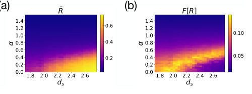
<figcaption class="paper-figure-caption"><b>Fig 1.</b> FIG. 2: Phase diagram of Eq. (1) on a fully connected weighted graph with couplings Jij = r−(1+σ) ij + εij defined on the ring, where εij is quenched Gaussian disorder with zero mean and standard deviation δ. Results are shown for N = 210 and δ = 4 × 10−6. The noise strength is D = 4.9 × 10−1, chosen to be larger than in Fig. 1 for the reason discussed in Supplemental Material [29]. As in Fig. 1, the color bars represent ensemble-averaged values over 5 graph realizations of (a) ¯R and (b) F[R], obtained from numerical integration with tm = 4.5 × 104 and T = 5 × 103.</figcaption>
</figure>
<figure class="paper-figure-card">
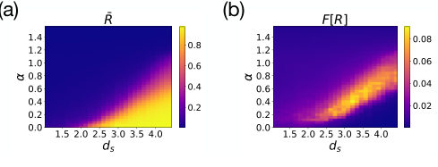
<figcaption class="paper-figure-caption"><b>Fig 2.</b> FIG. 1: Phase diagram of Eq. (1) in the (ds, α) plane for complex networks with continuously tunable spectral dimension [28]. The initial phases θi are independently drawn from a uniform distribution, with network size N = 214 and noise strength D = 4 × 10−2. The color bars show ensemble-averaged values over 20 network realizations of (a) the long-time average of the synchronization order parameter, ¯R, and (b) the dynamical fluctuation, F[R] [Eq. (4)], obtained by numerical integration with tm = 4.8 × 104 and T = 2 × 103.</figcaption>
</figure>
<figure class="paper-figure-card">
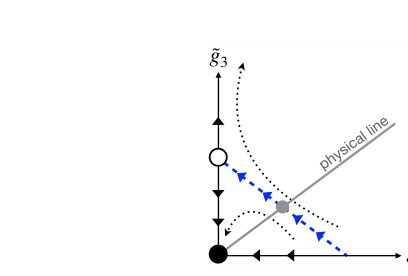
<figcaption class="paper-figure-caption"><b>Fig 3.</b> FIG. 3: Schematic RG flow in coupling-constant space for σ ∈(0, 1), corresponding to ds ∈(2, ∞). As discussed in the main text, the ˜g1 direction does not affect the critical behavior; we therefore show the (˜g2, ˜g3) plane. Arrows indicate stable flow directions. The filled circle at the origin denotes the trivial stable fixed point. The open circle on the ˜g3 axis denotes the nontrivial fixed point [Eq. (20a)], around which the critical manifold is locally defined and shown as the blue dashed line. This manifold intersects the physical line of the present system [Eq. (12)], shown as the gray straight line through the origin. Dotted arrows indicate schematic RG trajectories. As discussed...</figcaption>
</figure>
</div>

<p><strong>Summary.</strong> This paper investigates how the geometric property of a network, its spectral dimension ($d_s$), dictates the onset of collective synchronization in nonreciprocal phase oscillators. Using advanced techniques like the Dynamical Renormalization Group and analyzing the Kuramoto-Sakaguchi model, the authors establish critical thresholds for both $d_s$ and the coupling's nonreciprocity ($\alpha$). The findings provide a powerful framework for understanding pattern formation in complex, noisy systems.</p>
<p><strong>Why it may be interesting.</strong> This work connects concepts from condensed matter critical phenomena (RG theory) with non-equilibrium dynamics in complex systems, providing quantitative tools to analyze synchronization transitions beyond simple mean-field approaches.</p>
<details>
<summary>Detailed structure</summary>
<p><strong>Main problem.</strong> The study determines how the spectral dimension ($d_s$) of a complex network controls critical synchronization phenomena in nonreciprocal phase oscillator systems.</p>
<p><strong>Main result.</strong> Synchronization transitions are governed by $d_s$, revealing a critical spectral dimension $d_s^c=2$ for certain regimes, and deriving an analytical expression for the critical phase lag $\alpha_c$.</p>
<p><strong>Method.</strong> The analysis employs advanced theoretical tools including the Dynamical Renormalization Group (DRG) method, Martin-Siggia-Rose formalism, and spectral dimension estimation from network eigenvalues.</p>
<p><strong>Model / system.</strong> The model consists of noisy identical Kuramoto–Sakaguchi oscillators coupled on complex networks. The nonreciprocity is introduced via a phase lag $\alpha > 0$.</p>
<p><strong>Key observables.</strong> Synchronization Order Parameter ($R$), critical phase lag ($\alpha_c$), and the spectral dimension ($d_s$).</p>
<p><strong>Important parameters / regimes.</strong> Spectral dimension ($d_s$), phase lag ($\alpha$), network coupling strength, and noise strength.</p>
<p><strong>Assumptions / limitations.</strong> The analysis relies on linearizing the dynamics near small phase differences and using approximations like center manifold theory in the RG flow analysis.</p>
<p><strong>Figures summary.</strong> Figures illustrate phase diagrams showing synchronization transitions dependent on $(d_s, \alpha)$, and schematic representations of eigenvalue spectra used to estimate $d_s$.</p>
<p><strong>Paper structure.</strong> The paper progresses from defining the physical model and estimating $d_s$ via network eigenvalues, to deriving a dynamic response functional, applying the DRG method to find RG flow equations for couplings, and finally solving these equations to determine $\alpha_c$.</p>
</details>
<details>
<summary>Abstract</summary>
<p>Spectral dimension is a key determinant of critical phenomena, but its role in nonreciprocal systems remains unexplored. We study noisy identical Kuramoto-Sakaguchi oscillators with phase lag $α\in [0,π/2)$, where $α>0$ induces nonreciprocal interactions. Numerical phase diagrams in the $(d_s,α)$ plane in complex networks, where $d_s$ denotes the spectral dimension, reveal a critical phase lag $α_c$, below which spontaneous synchronization occurs. This critical phase lag appears only for $d_s > d_s^c$, where $d_s^c = 2$ is the critical spectral dimension, and increases monotonically with $d_s$. We analytically derive the criticality using the dynamical renormalization group method.</p>
</details>
<p><sub><a href="#top">↑ back to top</a></sub></p>

<p><a id="paper-2606.16942"></a></p>
<h3 id="adiabatic-realization-of-anomalous-floquet-topological-systems"><a href="http://arxiv.org/abs/2606.16942v1">Adiabatic realization of anomalous Floquet topological systems</a></h3>
<p><strong>Authors:</strong> Luca Asteria, Marcel N. Kosch, Henrik P. Zahn, Jonathan Bracker, André Eckardt, Klaus Sengstock, Christof Weitenberg<br>
<strong>Type:</strong> both · <strong>Category:</strong> other · <strong>PDF:</strong> <a href="https://arxiv.org/pdf/2606.16942v1">https://arxiv.org/pdf/2606.16942v1</a><br>
<strong>Analysis basis:</strong> full PDF text, analyzed in chunks
<strong>Topic relevance:</strong> 🔥 <code>analog quantum simulation</code> <strong>4/5</strong> · <code>non-equilibrium dynamics</code> <strong>3/5</strong> · <code>non-equilibrium universality</code> <strong>2/5</strong> · <code>driven-dissipative phase transition</code> <strong>1/5</strong> · <code>exotic spin models in light-matter</code> <strong>1/5</strong></p>
<div class="figure-strip-hint">↔ Scroll figures horizontally</div>
<div class="paper-figures-scroll">
<figure class="paper-figure-card">
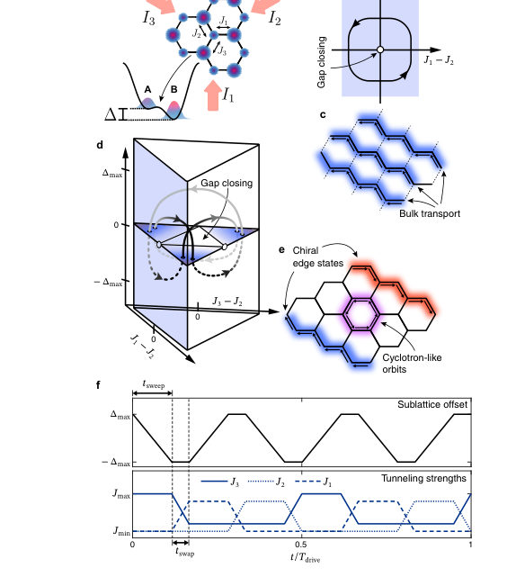
<figcaption class="paper-figure-caption"><b>Fig 1.</b> FIG. 1. A 2D charge pump as an anomalous Flo- quet topological phase. a) We realize a honeycomb lattice with tunnel couplings J1, J2, J3 along the three different direc- tions between neighboring sites, respectively, formed by three laser beams with intensities I1, I2, I3 and a sublattice offset ∆ (represented by disks of different radius). b) For J3 = 0 the system corresponds to uncoupled Rice-Mele-type 1D chains, described by a parameter space (J1 −J2, ∆) with a band de- generacy at (0, 0). c) A cyclic path around the degeneracy realizes the well-known quantized Thouless pump along these 1D chains. d) When including J3, the parameter space be- comes three dimensional (including J1 −J2 and...</figcaption>
</figure>
<figure class="paper-figure-card">
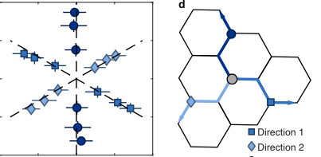
<figcaption class="paper-figure-caption"><b>Fig 2.</b> FIG. 2. 1D charge pumps embedded in a 2D lattice. a) Images of the atoms at the beginning and end of a driving cycle as in Fig. 1b obtained with the matter-wave microscope after ramping to a balanced situation I1 = I2 = I3. The pop- ulations of the two sublattices periodically invert after each step as becomes visible in the white rectangle containing an A and a B site. b) Overlay of the cut through the two images il- lustrating the displacement of the center of mass ∆xCoM. The parameters are ∆= 2π·7 kHz, ε = 0.5, Imax = 7 Er, tsweep = 1 ms, tswap = 0.45 ms. c) Movement of the center of mass for 1, 2, and 3 pump cycles for three different protocols, leading to a transport along three...</figcaption>
</figure>
<figure class="paper-figure-card">
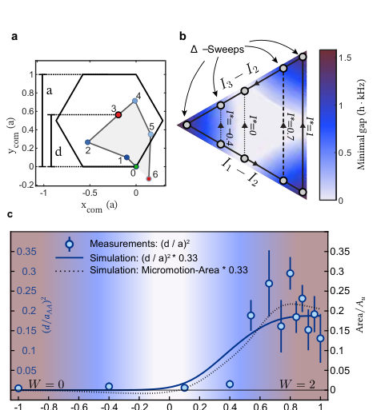
<figcaption class="paper-figure-caption"><b>Fig 3.</b> FIG. 3. Adiabatic realization and detection of anoma- lous Floquet topology. a) Measured micromotion trajec- tory for the adiabatic realization of the anomalous Floquet topological system (with ε = 0.45). The hexagonal pattern in- dicates the unit cell. d is the projection along y of the position of the center of mass after three steps (relative to t = 0). b) Projection of the path of the driving protocol into the ∆= 0 plane. The minimal instantaneous band gap during the pro- tocol is indicated by the color code. In each protocol, we start at the left corner and move along the equilateral triangle of side (I1 −I2)∗. At each corner, we perform a sweep inverting the offset with ∆max = h · 2.6...</figcaption>
</figure>
<figure class="paper-figure-card">
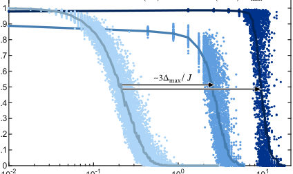
<figcaption class="paper-figure-caption"><b>Fig 4.</b> FIG. 4. Numerical study of robustness to disorder. a) Geometry of the numerical simulation for the transport along a zig-zag edge of a honeycomb lattice. The particle is initially located at site r1 and we study the probability |G(r1, r2)|2 of arriving at site r2 after exactly Nsteps = 16. This corresponds to 8 Floquet periods for the near-resonant drive and 4 Floquet periods for the adiabatic drive. The curves show the center- of-mass trajectories of a particle initially localized on a single lattice site for different disorder strengths and ∆max = 15J. b) Transmission probability |G(r1, r2)|2 as a function of the disorder strength for 100 realizations of the disorder together with an...</figcaption>
</figure>
</div>

<p><strong>Summary.</strong> The paper reports on the adiabatic realization of anomalous Floquet topological phases in ultracold atoms trapped in optical lattices. By slowly modulating the lattice geometry rather than driving near resonance, the researchers achieve robust control over these exotic quantum states. This method is significant because it offers a more stable and controllable pathway for engineering novel topological matter compared to existing techniques.</p>
<p><strong>Why it may be interesting.</strong> This work provides a highly controllable, experimentally viable platform for engineering exotic quantum phases of matter using ultracold atoms, moving beyond purely theoretical predictions in Floquet engineering.</p>
<details>
<summary>Detailed structure</summary>
<p><strong>Main problem.</strong> The research aims to demonstrate an adiabatic method for realizing anomalous Floquet topological phases, circumventing the limitations of conventional near-resonant driving schemes.</p>
<p><strong>Main result.</strong> Anomalous topological phases were successfully realized in ultracold atoms by adiabatically modulating the lattice geometry, showing robustness even in the presence of significant mean-field interactions.</p>
<p><strong>Method.</strong> The study combines theoretical analysis (using micromotion area as a winding number proxy) with experimental realization using ultracold atoms in optical lattices.</p>
<p><strong>Model / system.</strong> The system is modeled by atoms in a tunable honeycomb lattice, whose parameters ($J_i$, sublattice offset $\Delta$) are adiabatically modulated along a cyclic path in parameter space.</p>
<p><strong>Key observables.</strong> Micromotion area (proxy for winding number), directed chiral edge transport, and relative sublattice population imbalance ($   ext{Na}-    ext{Nb}$).</p>
<p><strong>Important parameters / regimes.</strong> Lattice geometry parameters ($J_1, J_2, J_3$, $\Delta$), driving frequency/period ($T_{	ext{drive}}$), and interaction strength ($U_H$).</p>
<p><strong>Assumptions / limitations.</strong> The adiabatic path keeps the system in the instantaneous ground state; measurements often involve approximations for detection efficiency or mean-field interactions.</p>
<p><strong>Figures summary.</strong> Figures illustrate the conceptual charge pump mechanism, experimental protocols involving lattice modulation steps, and measured trajectories/areas confirming the anomalous topological phase.</p>
<p><strong>Paper structure.</strong> The paper progresses from establishing the theoretical link between Thouless pumping and anomalous Floquet topology to detailing the adiabatic protocol, measuring the topological invariant (micromotion area), and finally demonstrating robustness against interactions and disorder.</p>
</details>
<details>
<summary>Abstract</summary>
<p>Topology has emerged as a central concept for classifying phases of matter. The situation is especially rich in periodically driven systems, where anomalous Floquet topological phases break the usual bulk-boundary correspondence between Chern number and edges modes of two-dimensional systems. These phases were so far realized by periodic modulation of the tunneling elements at frequencies near-resonant with respect to the system's bandwidth, a regime where Floquet heating plays a significant role in interacting systems. Here we show that such anomalous Floquet topological phases can also be realized by means of an adiabatic protocol, where the system is always in the instantaneous ground state of the cyclic path in parameter space, like in a Thouless charge pump. We experimentally realize such a state using ultracold atoms in a hexagonal lattice where we adiabatically modulate the lattice geometry, including the sublattice offset. To infer the topology, we use the micromotion area in real-space, which was recently identified as a proxy for the winding number. This way of realizing anomalous phases avoids resonant Floquet heating and imperfect loading into the target state. We demonstrate the robustness of the adiabatic construction by observing the anomalous phase even in the presence of mean-field interactions of magnitude comparable to all other energy scales. These findings are promising for engineering novel topological states in a more robust way.</p>
</details>
<p><sub><a href="#top">↑ back to top</a></sub></p>

<p><a id="paper-2606.16451"></a></p>
<h3 id="detecting-basis-dependent-hardware-errors-through-spatio-temporal-quantum-steering"><a href="http://arxiv.org/abs/2606.16451v1">Detecting basis-dependent hardware errors through spatio-temporal quantum steering</a></h3>
<p><strong>Authors:</strong> Hsiang-Wei Huang, Kuo-Feng Chiu, Yi-Te Huang, Jhen-Dong Lin, Tse-Ming Chen, Yueh-Nan Chen<br>
<strong>Type:</strong> both · <strong>Category:</strong> quantum information and computing · <strong>PDF:</strong> <a href="https://arxiv.org/pdf/2606.16451v1">https://arxiv.org/pdf/2606.16451v1</a><br>
<strong>Analysis basis:</strong> full PDF text, analyzed in chunks
<strong>Topic relevance:</strong> 🔥 <code>QC/QI experiment</code> <strong>4/5</strong> · <code>entanglement &amp; information structure</code> <strong>2/5</strong> · <code>quantum measurements</code> <strong>2/5</strong> · <code>correlated / nonlocal dissipation</code> <strong>1/5</strong> · <code>methods for driven-dissipative</code> <strong>1/5</strong> · <code>non-equilibrium dynamics</code> <strong>1/5</strong></p>
<div class="figure-strip-hint">↔ Scroll figures horizontally</div>
<div class="paper-figures-scroll">
<figure class="paper-figure-card">
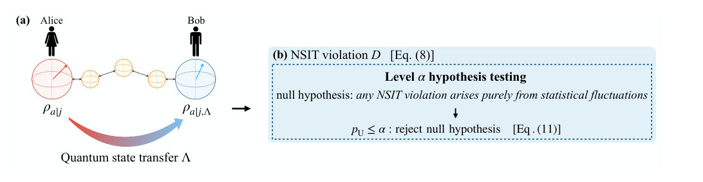
<figcaption class="paper-figure-caption"><b>Fig 1.</b> FIG. 1. The illustration of our result. (a) In the STS framework introduced in Sec. II, Alice prepares the state ρa|j and transmits it to Bob via the QST process Λ with different indices a and j. Then Bob collects the received state ρa|j,Λ to construct the assemblage {˜ρa|j,Λ}, which characterizes the non-classicality of the QST process. (b) We investigate the presence of basis-dependent hardware errors in the QST process by performing a level α hypothesis testing on the NSIT violation D of {˜ρa|j,Λ}. If the resulting p-value does not exceed α, the null hypothesis that any NSIT violation arises purely from statistical fluctuation is rejected, suggesting that it may instead stem from a...</figcaption>
</figure>
<figure class="paper-figure-card">
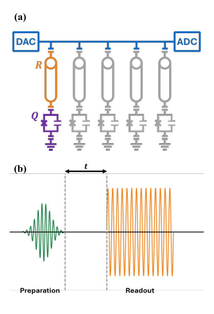
<figcaption class="paper-figure-caption"><b>Fig 2.</b> FIG. 2. Device schematic and experimental pulse sequence. (a) Circuit diagram showing the experimental system of the five-qubit superconducting quantum processor. The active qubit (Q) under study and its readout resonator (R) are high- lighted in color, whereas the other four qubits on the same processor are inactive during the single-qubit QST experi- ment. (b) Sequence of control and measurement pulses for the single-qubit QST experiment. The qubit is prepared to each state ρ0|z, ρ1|z, ρ0|x, ρ1|x, held for an idling time t, and subsequently measured.</figcaption>
</figure>
<figure class="paper-figure-card">
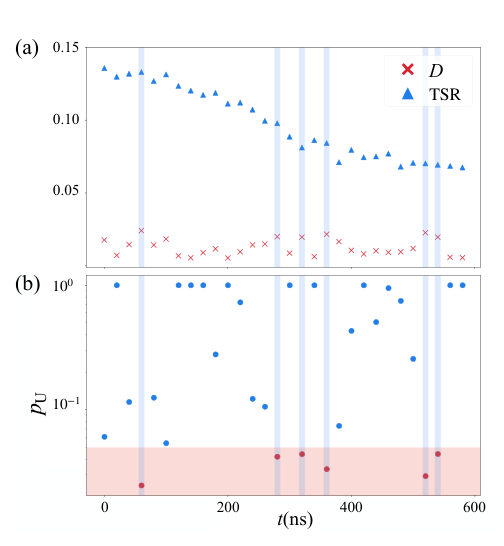
<figcaption class="paper-figure-caption"><b>Fig 3.</b> FIG. 3. Single-qubit QST task on the superconducting quan- tum processor. (a) The non-classicality of QST captured by TSR and the degree of NSIT violation D at different time points. (b) By evaluating pU at each time point by Eq. (12), we find instances within the red shaded area provide the sta- tistical evidence (pU ≤0.05) of basis-dependent hardware er- rors.</figcaption>
</figure>
<figure class="paper-figure-card">
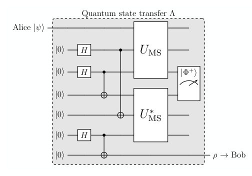
<figcaption class="paper-figure-caption"><b>Fig 4.</b> FIG. 4. Teleportation circuit based on the Hayden-Preskill decoding protocol [56]. The maximally scrambling unitary [UMS and its conjugate U ∗ MS] encodes Alice’s state (informa- tion) into the global system. After performing the Bell state measurement, Bob can decode Alice’s state by post-selecting the outcome corresponding to the |Φ+⟩= (|00⟩+ |11⟩)/ √</figcaption>
</figure>
<figure class="paper-figure-card">
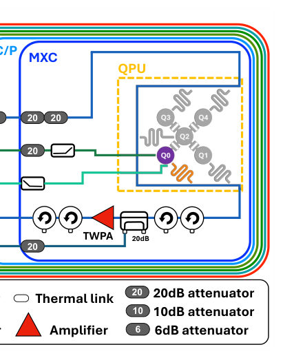
<figcaption class="paper-figure-caption"><b>Fig 5.</b> FIG. 5. Cryogenic measurement setup and layout of the superconducting processor.</figcaption>
</figure>
</div>

<p><strong>Summary.</strong> This work introduces a statistical hypothesis test based on the No-Signaling-In-Time (NSIT) condition to diagnose basis-dependent errors in quantum state transfer. By using Chebyshev's inequality, the authors distinguish genuine hardware flaws from mere statistical noise across superconducting and trapped-ion platforms. The findings emphasize that advanced statistical testing is necessary for reliable benchmarking of current quantum devices.</p>
<p><strong>Why it may be interesting.</strong> It provides a rigorous, statistically grounded methodology for benchmarking near-term quantum hardware beyond simple fidelity metrics, which is crucial for advancing fault-tolerant quantum computation.</p>
<details>
<summary>Detailed structure</summary>
<p><strong>Main problem.</strong> The paper addresses the critical need for robust methods to detect basis-dependent hardware errors during quantum state transfer (QST) processes.</p>
<p><strong>Main result.</strong> By employing statistical hypothesis testing on the violation of the No-Signaling-In-Time (NSIT) condition, the authors provided statistical evidence of intrinsic hardware errors in superconducting and trapped-ion platforms.</p>
<p><strong>Method.</strong> They constructed a distribution-free upper bound on the p-value using Chebyshev's inequality to test the null hypothesis that observed NSIT violations are merely due to finite measurement statistics.</p>
<p><strong>Model / system.</strong> The study uses the spatio-temporal quantum steering (STS) framework applied to qubit systems, testing protocols like single-qubit state transfer and seven-qubit Hayden-Preskill teleportation on superconducting and trapped-ion devices.</p>
<p><strong>Key observables.</strong> No-signaling-in-time violation measure ($D$), statistical p-value upper bound ($p_U$), and Spatio-Temporal Steering Robustness (STSR).</p>
<p><strong>Important parameters / regimes.</strong> Superconducting processor parameters, IonQ device fidelity ($F_{avg}$), and the significance level $\alpha$.</p>
<p><strong>Assumptions / limitations.</strong> The statistical test assumes measurements are independent and identically distributed (i.i.d.), which is noted as a limitation for real-world devices.</p>
<p><strong>Figures summary.</strong> Figures illustrate the STS framework, hypothesis testing on $D$ vs time, and device schematics for superconducting processors and teleportation circuits.</p>
<p><strong>Paper structure.</strong> The paper introduces the diagnostic tool (NSIT violation), develops the statistical test using Chebyshev's inequality to handle finite statistics, and then applies this method sequentially to two distinct hardware platforms (superconducting and trapped-ion).</p>
</details>
<details>
<summary>Abstract</summary>
<p>Spatio-temporal quantum steering provides a framework for benchmarking the nonclassicality of general quantum state transfer processes. A central diagnostic is the no-signaling-in-time (NSIT) condition, whose violation can indicate basis-dependent hardware errors. However, finite measurement statistics may also yield apparent violations, thereby obscuring the detection of basis-dependent hardware errors. To address this, we construct a statistical hypothesis test under the null hypothesis that NSIT violations arise solely from statistical fluctuations. Combining the statistical properties of NSIT violation under the null hypothesis with Chebyshev's inequality, we obtain a distribution-free upper bound on the $p$-value without parametric assumptions. We apply this method to two examples. For a single-qubit state-transfer experiment on a superconducting processor, we observe several instances that the NSIT violation is observed and the null hypothesis is simultaneously rejected by a small $p$-value, providing statistical evidence of basis-dependent hardware errors. For a seven-qubit Hayden-Preskill teleportation protocol on IonQ devices, the null hypothesis is also rejected even when the average fidelity exceeds the classical threshold, while the associated nonclassicality measure vanishes. Our results highlight the necessity of statistical hypothesis testing for detecting basis-dependent errors in near-term quantum devices.</p>
</details>
<p><sub><a href="#top">↑ back to top</a></sub></p>

<p><a id="paper-2606.15350"></a></p>
<h3 id="linear-algebra-at-exponential-scale-via-tensor-network-dimension-reduction"><a href="http://arxiv.org/abs/2606.15350v1">Linear algebra at exponential scale via tensor network dimension reduction</a></h3>
<p><strong>Authors:</strong> Chris Camaño, Ethan N. Epperly, Raphael A. Meyer, Joel A. Tropp<br>
<strong>Type:</strong> theory · <strong>Category:</strong> numerical methods · <strong>PDF:</strong> <a href="https://arxiv.org/pdf/2606.15350v1">https://arxiv.org/pdf/2606.15350v1</a><br>
<strong>Analysis basis:</strong> full PDF text, analyzed in chunks
<strong>Topic relevance:</strong> 🔥 <code>analog quantum simulation</code> <strong>4/5</strong> · <code>methods for driven-dissipative</code> <strong>3/5</strong> · <code>entanglement &amp; information structure</code> <strong>2/5</strong> · <code>driven-dissipative phase transition</code> <strong>1/5</strong> · <code>non-equilibrium dynamics</code> <strong>1/5</strong></p>
<div class="figure-strip-hint">↔ Scroll figures horizontally</div>
<div class="paper-figures-scroll">
<figure class="paper-figure-card">

<figcaption class="paper-figure-caption"><b>Fig 1.</b> Figure 1: Exponential-scale linear algebra. Computational resources to estimate the partition function Z(β) = Tr(e−βH) of the PTFIM Hamiltonian H ∈R2n×2n (3.8) with increasing order n using the XNysTrace algorithm implemented with dense, sparse (CSR), and tensor network data formats with both rMPS and Gaussian–Kronecker test vectors. From left to right, the panels report the memory, wall-clock time, and number of applications of the primitive ω 7→e−βHω required to estimate Z(β) to 1% relative error. Markers track the median over 10 trials, and shaded regions bound the 10% and 90% quantiles. Dense and sparse matrix computations quickly expend the available memory, and Gaussian–Kronecker...</figcaption>
</figure>
<figure class="paper-figure-card">
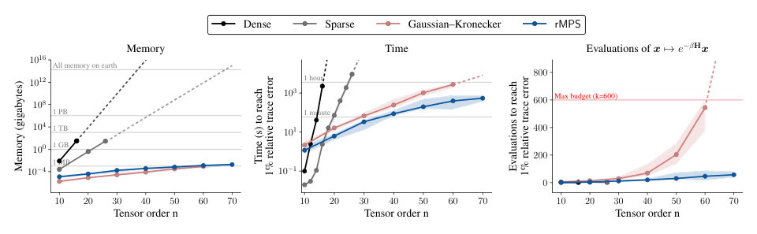
<figcaption class="paper-figure-caption"><b>Fig 2.</b> Figure 1 shows the results. For tensor order n = 70, the rMPS-based implementation of XNysTrace can estimate the partition function to 1% relative error using megabytes of storage and minutes of computation. By using rMPSs and efficient tensor network methods to store and apply the Hamiltonian H, we can extend the XNysTrace algorithm to perform trace estimation at exponential scale. As a baseline, we compare against the performance of Gaussian–Kronecker vectors that have the form ω = ϕ(1) ⊗· · · ⊗ϕ(n) with iid Gaussian ϕ(i) ∼NR(0, I2). Gaussian–Kronecker vectors are widely used in the literature [2,4,15,17,18,74,75,101], and they also enable us to implement XNysTrace at exponential scale....</figcaption>
</figure>
<figure class="paper-figure-card">
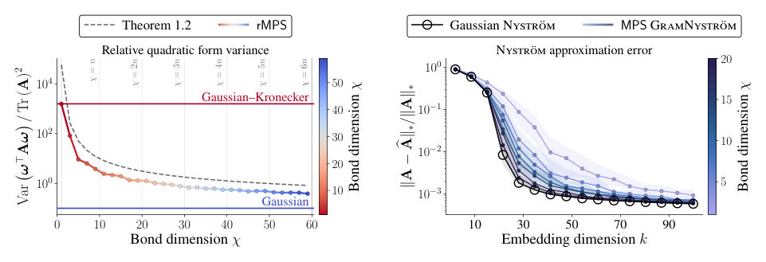
<figcaption class="paper-figure-caption"><b>Fig 3.</b> Figure 2: Convergence of rMPSs to Gaussian behavior. (Left) Normalized variance of quadratic form trace estimator Var(ω∗Aω)/ Tr(A)2 evaluated across rMPS bond dimension χ ∈[1, 100]. As the rMPS bond dimension χ approaches n, the variance of the rMPS quadratic form converges to that of a dense Gaussian random vector. (Right) Relative error ∥A −bA∥∗/∥A∥∗for a randomized Nystr¨om approximation bA as a function of approximation rank. In both panels, the matrix is chosen adversarially: A = QQ∗+ 10−5I ∈ R210×210 where Q consists of the first 20 columns of the orthogonal Walsh–Hadamard matrix. Sample variances are computed using 500 random samples; the markers track the median over 20 trials;...</figcaption>
</figure>
<figure class="paper-figure-card">
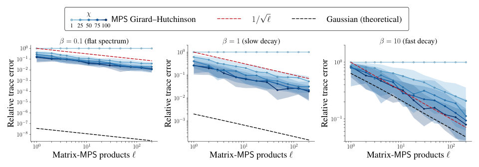
<figcaption class="paper-figure-caption"><b>Fig 4.</b> Figure 3: rMPS Girard–Hutchinson: Dependence on spectral decay. MPS Girard–Hutchinson estimator (Algorithm 1) used to estimate to the partition function Z(β) = Tr(e−βH) of the classical 1D Ising Hamiltonian (3.4) with n = 50 sites and β ∈{0.1, 1, 10}. The markers track the median relative error over 60 trials; shaded regions connect the 25% and 75% quantiles. The black line ( ) shows the predicted behavior for standard Gaussian probes, and the red line ( ) illustrates the Monte Carlo error decay 1/ √</figcaption>
</figure>
<figure class="paper-figure-card">
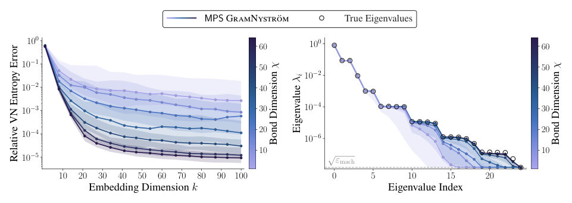
<figcaption class="paper-figure-caption"><b>Fig 5.</b> Figure 4: Nystr¨om approximation at exponential scale. Estimates via funNystr¨om for the von Neumann entanglement entropy (3.7) of the half-chain reduced density matrix ρA ∈C2100×2100 associated with the ground state of the 200-site periodic transverse-field Ising Hamiltonian (3.8). The markers track the median over 60 trials; shaded regions are bounded by the 10% and 90% quantiles. (Left) Relative entropy errors |S(ρA) −S(bρA)|/|S(ρA)| as a function of the embedding dimension k for each bond dimension χ ∈{1, 2, 4, 8, 16, 32, 64}. (Right) Approximate eigenvalues of bρA for rank-100 approximation produced by MPS GramNystr¨om for several values of χ compared with the exact eigenvalues. See...</figcaption>
</figure>
</div>

<p><strong>Summary.</strong> This paper introduces randomized dimension reduction techniques using random Matrix Product States (rMPS) to solve linear algebra problems on exponentially large matrices arising in quantum physics. By projecting these high-dimensional operators onto a low-rank rMPS subspace, it enables efficient computation of observables like partition functions and traces that were previously computationally inaccessible.</p>
<p><strong>Why it may be interesting.</strong> This work is highly relevant as it provides concrete, scalable numerical machinery to tackle quantum many-body problems that are intractable for exact diagonalization or standard tensor methods due to the sheer size of the Hilbert space.</p>
<details>
<summary>Detailed structure</summary>
<p><strong>Main problem.</strong> The core challenge is solving linear algebra problems whose computational resources scale exponentially with system size due to the curse of dimension.</p>
<p><strong>Main result.</strong> Randomized dimension reduction techniques, specifically using random Matrix Product States (rMPS), allow for provably efficient estimation of quantities like partition functions and traces at exponential scales.</p>
<p><strong>Method.</strong> The authors develop and analyze randomized algorithms that replace direct computation with low-dimensional projections derived from rMPS test matrices. These methods adapt standard linear algebra estimators (like the Girard–Hutchinson estimator) to the tensor network structure.</p>
<p><strong>Model / system.</strong> The primary physical model is quantum many-body physics, exemplified by calculating the partition function $Z(eta)$ for Hamiltonians like the PTFIM, which leads to exponentially large matrices ($2^n 	imes 2^n$). The mathematical framework relies on representing these operators and states using Matrix Product States (MPS) and Operators (MPO).</p>
<p><strong>Key observables.</strong> Partition function $Z(eta)$, trace estimation $ ext{Tr}(e^{-eta H})$, eigenvalue approximations, and various norms ($|A|_*$, $\|A\|_F$).</p>
<p><strong>Important parameters / regimes.</strong> System size exponent ($n$), local dimension ($d$), bond dimension ($\chi$), and the ratio $\chi/n$ which dictates algorithmic scaling.</p>
<p><strong>Assumptions / limitations.</strong> The analysis assumes that rMPS test matrices provide a sufficiently good embedding (subspace injection) to preserve necessary geometric properties for accurate estimation, particularly when the bond dimension $\chi \gtrsim n$.</p>
<p><strong>Figures summary.</strong> Figure 1 demonstrates rMPS-based trace estimation for $n=70$ requiring only megabytes of storage. Figure 2 shows convergence of variance estimators towards Gaussian behavior as $\chi/n$ increases. Figure 3 compares the accuracy of the rMPS Girard–Hutchinson estimator against theoretical bounds.</p>
<p><strong>Paper structure.</strong> The paper progresses by first identifying the exponential scaling problem, then introducing tensor networks (MPS/MPO) for representation, developing randomized dimension reduction via rMPSs, and finally applying these tools to specific linear algebra tasks like trace estimation and Nyström approximation with rigorous error bounds.</p>
</details>
<details>
<summary>Abstract</summary>
<p>Many problems in modern scientific computing are challenging because of a \emph{curse of dimension}, where their mathematical formulation involves objects whose dimension is \emph{exponential} in the nominal "size" of the problem. Tensor networks can provide a compact representation for exponentially large vectors and matrices that arise in applications, but these representations do not always lead to reliable algorithms. This paper develops and analyzes techniques for randomized dimension reduction of tensor network data. These techniques support a suite of efficient algorithms for provably solving exponential-scale linear algebra problems, including trace estimation and eigenvalue approximation. The paper includes several stylized illustrations from quantum many-body physics with ambient dimension up to $2^{200}$.</p>
</details>
<p><sub><a href="#top">↑ back to top</a></sub></p>

<p><a id="paper-2606.16916"></a></p>
<h3 id="quantifying-coherence-to-entanglement-conversion-efficiency-under-noisy-operations"><a href="http://arxiv.org/abs/2606.16916v1">Quantifying Coherence-to-Entanglement Conversion Efficiency under Noisy Operations</a></h3>
<p><strong>Authors:</strong> Asad Ali, H. Kuniyil, M. I. Hussain, M. T. Rahim, Abdallah Slaoui, Saif Al-Kuwari<br>
<strong>Type:</strong> theory · <strong>Category:</strong> quantum information and computing · <strong>PDF:</strong> <a href="https://arxiv.org/pdf/2606.16916v1">https://arxiv.org/pdf/2606.16916v1</a><br>
<strong>Analysis basis:</strong> full PDF text, analyzed in chunks
<strong>Topic relevance:</strong> 🔥 <code>entanglement &amp; information structure</code> <strong>4/5</strong> · <code>correlated / nonlocal dissipation</code> <strong>2/5</strong> · <code>driven-dissipative phase transition</code> <strong>2/5</strong> · <code>methods for driven-dissipative</code> <strong>1/5</strong> · <code>non-equilibrium dynamics</code> <strong>1/5</strong> · <code>non-equilibrium universality</code> <strong>1/5</strong></p>
<div class="figure-strip-hint">↔ Scroll figures horizontally</div>
<div class="paper-figures-scroll">
<figure class="paper-figure-card">
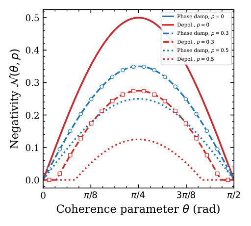
<figcaption class="paper-figure-caption"><b>Fig 1.</b> FIG. 2. Entanglement negativity N(θ, p) as a function of the input coherence angle θ for representative noise strengths. Phase damping preserves the sin(2θ) profile up to a multi- plicative factor, whereas global depolarizing noise introduces a threshold through the term −p/4 in Eq. (46). Symbols de- note numerical simulations.</figcaption>
</figure>
<figure class="paper-figure-card">
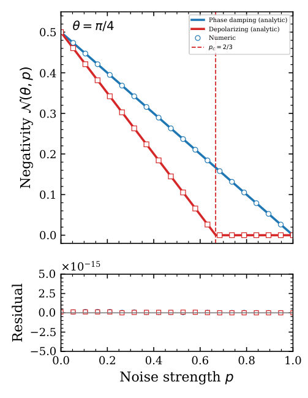
<figcaption class="paper-figure-caption"><b>Fig 2.</b> FIG. 1. Entanglement negativity N(θ, p) as a function of noise strength p for the maximally coherent input θ = π/4. Solid curves denote the analytic expressions in Eqs. (34) and (46), while symbols denote direct numerical simulation. The vertical dashed line marks the depolarizing sudden-death threshold pc = 2/3.</figcaption>
</figure>
<figure class="paper-figure-card">
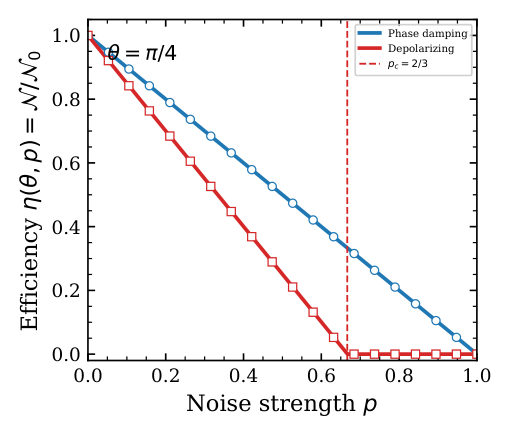
<figcaption class="paper-figure-caption"><b>Fig 3.</b> FIG. 3. Coherence-to-entanglement conversion efficiency η(θ, p) = N(θ, p)/N0(θ) for θ = π/4. The phase-damping efficiency is ηphase = 1 −p, while the global depolarizing effi- ciency decreases to zero at pc = 2/3. Symbols denote numer- ical simulations.</figcaption>
</figure>
<figure class="paper-figure-card">
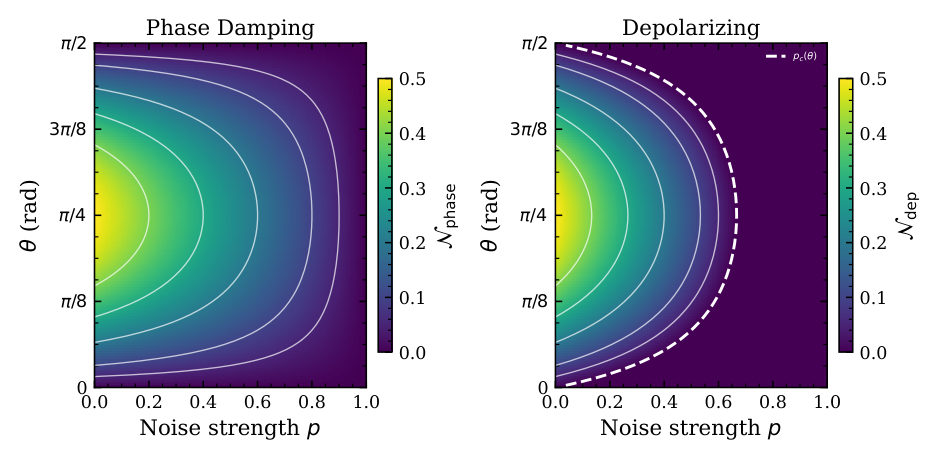
<figcaption class="paper-figure-caption"><b>Fig 4.</b> FIG. 4. Two-dimensional negativity landscape N(θ, p) over the full (θ, p) parameter space for independent phase damping and global depolarizing noise. Contours show analytic negativity levels. In the depolarizing case, the dashed curve marks the analytic sudden-death boundary pc(θ) = 2 sin(2θ)/[2 sin(2θ) + 1].</figcaption>
</figure>
<figure class="paper-figure-card">
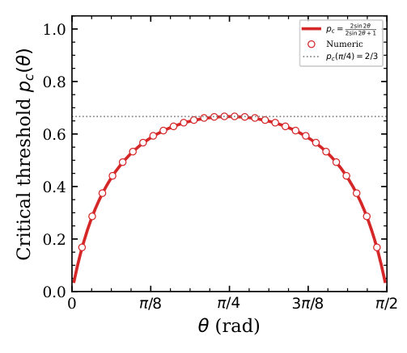
<figcaption class="paper-figure-caption"><b>Fig 5.</b> FIG. 5. Entanglement sudden-death threshold pc(θ) for the global two-qubit depolarizing channel. The solid curve is the analytic result in Eq. (48), while symbols denote thresholds extracted numerically from the first zero of Ndep(θ, p). The maximum value pc = 2/3 occurs at θ = π/4.</figcaption>
</figure>
</div>

<p><strong>Summary.</strong> The paper analytically investigates the trade-off between initial local quantum coherence and generated bipartite entanglement when environmental noise is present. It compares two distinct noise channels—phase damping and global depolarization—showing that they induce fundamentally different decay mechanisms. The findings establish key thresholds for entanglement sudden death, providing vital guidelines for assessing hardware performance in quantum computing protocols.</p>
<p><strong>Why it may be interesting.</strong> This work provides an analytical benchmark for understanding how specific noise models constrain fundamental quantum information processes like coherence-to-entanglement conversion, which is crucial for designing robust near-term quantum devices.</p>
<details>
<summary>Detailed structure</summary>
<p><strong>Main problem.</strong> The study quantifies how efficiently local quantum coherence can be converted into bipartite entanglement when the system is subjected to environmental noise.</p>
<p><strong>Main result.</strong> Different noise channels (phase damping vs. global depolarization) cause distinct degradation patterns, with one leading to a finite threshold for entanglement sudden death while the other causes smooth multiplicative decay.</p>
<p><strong>Method.</strong> The authors use analytical derivations and numerical simulations based on calculating the entanglement negativity via the partial transpose spectrum of the density matrix.</p>
<p><strong>Model / system.</strong> The model is a minimal two-qubit protocol involving an initial coherent single-qubit input, followed by an ideal CNOT gate, and subsequent environmental noise modeled by specific CPTP maps (phase damping or global depolarizing noise).</p>
<p><strong>Key observables.</strong> Entanglement Negativity ($N$), Coherence-to-Entanglement Conversion Efficiency ($\eta$), and the critical noise strength for Entanglement Sudden Death ($p_c$).</p>
<p><strong>Important parameters / regimes.</strong> Input coherence angle $ heta$ (determining $C_{l1} = \sin(2	heta)$) and noise parameters ($p$ for damping or depolarization).</p>
<p><strong>Assumptions / limitations.</strong> The analysis is restricted to the X-state structure generated by the CNOT protocol, and the comparison focuses on negativity as the entanglement measure.</p>
<p><strong>Figures summary.</strong> Figures illustrate the decay of negativity versus noise strength ($p$) for both noise types, showing phase damping vanishing at $p=1$ and global depolarization vanishing at a finite threshold $p_c(	heta)$.</p>
<p><strong>Paper structure.</strong> The paper progresses by first establishing the ideal noiseless conversion rate ($  ext{Negativity} = rac{1}{2} C_{l1}$), then deriving analytic expressions for entanglement under phase damping, followed by analyzing global depolarization, and concluding with a direct comparison of the resulting efficiency functions.</p>
</details>
<details>
<summary>Abstract</summary>
<p>We investigate the noise-limited conversion of local quantum coherence into bipartite entanglement in a minimal two-qubit protocol comprising a coherent single-qubit input, an incoherent ancilla, an ideal CNOT operation, and subsequent environmental noise. Employing the $l_1$-norm of coherence and the entanglement negativity as resource quantifiers, we establish an exact closed-form correspondence between local single-qubit input coherence and the two-qubit entanglement generated in the noiseless limit, showing that the output negativity is precisely one half of the initial $l_1$-coherence. We then derive analytic expressions for the surviving entanglement and the associated coherence-to-entanglement conversion efficiency under two representative noise mechanisms: independent phase damping and global two-qubit depolarizing noise. The two channels exhibit qualitatively distinct degradation behavior. Phase damping induces a universal multiplicative suppression of the generated entanglement, yielding a coherence-independent conversion efficiency and no finite-noise entanglement sudden death. In contrast, global depolarization introduces an isotropic mixing contribution that shifts the partial-transpose spectrum, producing coherence-dependent degradation and a finite sudden-death threshold. We show that maximally coherent inputs not only maximize the entanglement generated by the CNOT protocol but also optimize its robustness against depolarizing noise. Direct density-matrix simulations validate the analytic results to numerical precision. These findings provide a compact analytic benchmark for assessing how different noise mechanisms constrain coherence-to-entanglement conversion in elementary quantum-information protocols and near-term quantum devices.</p>
</details>
<p><sub><a href="#top">↑ back to top</a></sub></p>

<p><a id="paper-2606.15061"></a></p>
<h3 id="vqe-as-initial-state-preparation-for-qpe-on-heisenberg-spin-glass-hamiltonians"><a href="http://arxiv.org/abs/2606.15061v1">VQE as Initial State Preparation for QPE on Heisenberg Spin-Glass Hamiltonians</a></h3>
<p><strong>Authors:</strong> Elijah Pelofske, Stephan Eidenbenz<br>
<strong>Type:</strong> theory · <strong>Category:</strong> disordered systems and neural networks · <strong>PDF:</strong> <a href="https://arxiv.org/pdf/2606.15061v1">https://arxiv.org/pdf/2606.15061v1</a><br>
<strong>Analysis basis:</strong> full PDF text, analyzed in chunks
<strong>Topic relevance:</strong> 🔥 <code>analog quantum simulation</code> <strong>4/5</strong> · <code>exotic spin models in light-matter</code> <strong>3/5</strong> · <code>entanglement &amp; information structure</code> <strong>2/5</strong> · <code>methods for driven-dissipative</code> <strong>1/5</strong> · <code>non-equilibrium dynamics</code> <strong>1/5</strong></p>
<div class="figure-strip-hint">↔ Scroll figures horizontally</div>
<div class="paper-figures-scroll">
<figure class="paper-figure-card">
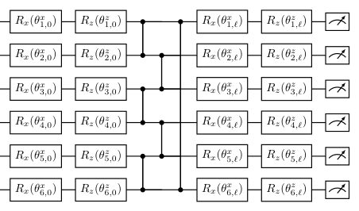
<figcaption class="paper-figure-caption"><b>Fig 1.</b> FIG. 1: VQE circuit diagram structure, applied to 6 qubits. L parameterizes the VQE depth, where L = 0 is the non-entangling basic case. The ansatz parameters are defined by the vector of θi ∈(0, 2π) real values. In order to extract the full Hamiltonian expectation value, each set of parameters is evaluated using measurements in Pauli X, Y, and Z bases thus requiring basis change rotations prior to measurement. CZ gates are the entangling operation be- tween pairs of qubits used in this ansatz.</figcaption>
</figure>
<figure class="paper-figure-card">
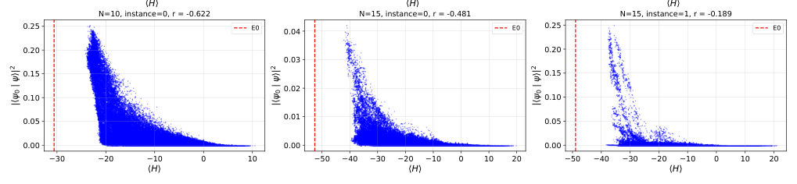
<figcaption class="paper-figure-caption"><b>Fig 2.</b> FIG. 2: Energy (x-axis) vs overlap (y-axis) scatterplots of states produced during VQE training. The 6 sub- plots each show a distribution produced from a different quantum Hamiltonian. The true minimum eigenvalue E0 is denoted by a vertical dashed red line in each plot. The title of each subplot states the system size, an instance number index (which can range from 0 to 9), and the Pearson correlation coefficient (r) from a generic linear regression. The Hamiltonian expecta- tion value ⟨H⟩is obtained from the VQE training and therefore has shot noise, whereas |⟨ψ0 | ψ⟩|2 is calculated exactly for each state, with no shot noise. “Good” states are in the upper left-hand corner of each plot...</figcaption>
</figure>
<figure class="paper-figure-card">
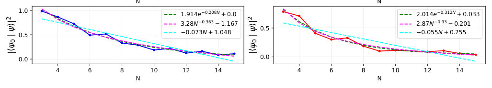
<figcaption class="paper-figure-caption"><b>Fig 3.</b> FIG. 3: Top left: Largest overlap computed from VQE as a function of quantum Hamiltonian size (x-axis), top right: overlap of the absolute lowest energy VQE state as a function of quantum Hamiltonian size. For each system size there are 10 independent instances with different coefficients, here each point in the left subplot is the abso- lute best overlap found during VQE training for each instance. The solid line plots the mean overlap among the 10 instances. The energy estimate used to determine the lowest energy VQE state for the right-most plot is calculated using the finite-shot estimate from the training. Bottom row plots best-fit regression lines for exponential (3 parameters),...</figcaption>
</figure>
<figure class="paper-figure-card">
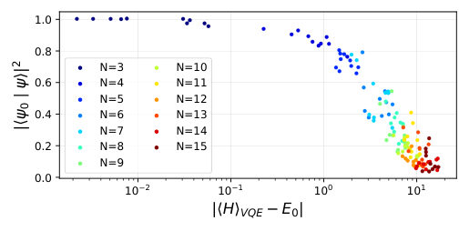
<figcaption class="paper-figure-caption"><b>Fig 4.</b> FIG. 4: Highest overlap VQE computed state as a function of the energy absolute-error of that state (log scale x-axis). Each plotted dot corresponds to a sin- gle quantum Hamiltonian. The estimate of ⟨H⟩V QE has shot noise, whereas both E0 and |⟨ψ0 | ψ⟩|2 are calculated exactly with no shot noise.</figcaption>
</figure>
<figure class="paper-figure-card">
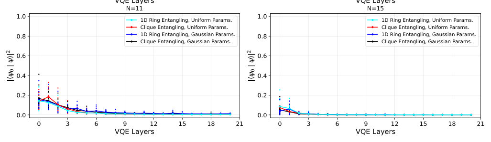
<figcaption class="paper-figure-caption"><b>Fig 5.</b> FIG. 5: Comparing the performance of number of entangling layers, ring and clique entangling layers, and parameter initialization distributions with respect to overlap. This is an absolute-idealized overlap case, where only the best overlap found from each numerical computation (for each ansatz) is plotted.</figcaption>
</figure>
</div>

<p><strong>Summary.</strong> The paper investigates using VQE outputs as initial states for QPE on Heisenberg spin glass models. The findings indicate that VQE struggles to reliably converge to the true ground state, and the overlap with the ground state does not scale favorably with system size. This suggests that while VQE is useful, it may only serve as a heuristic tool rather than a guaranteed path to quantum advantage for these complex systems.</p>
<p><strong>Why it may be interesting.</strong> This work directly addresses a critical bottleneck in quantum simulation: preparing high-fidelity initial states. For AMO physicists working with complex Hamiltonians (like those found in frustrated magnets or disordered lattices), understanding when variational methods fail to capture essential physics is vital for designing viable quantum algorithms.</p>
<details>
<summary>Detailed structure</summary>
<p><strong>Main problem.</strong> The study assesses whether Variational Quantum Eigensolver (VQE) can efficiently prepare initial quantum states with high overlap to the true ground state for use in Quantum Phase Estimation (QPE).</p>
<p><strong>Main result.</strong> VQE generally fails to efficiently converge to the ground state, and while a correlation exists between low energy and high overlap, this relationship is not guaranteed. The best-found overlap scaling suggests VQE may be a heuristic algorithm rather than a reliable method for achieving exponential speedup in QPE.</p>
<p><strong>Method.</strong> The authors used extensive numerical computations involving VQE training on disordered Heisenberg spin glass Hamiltonians, comparing results against exact diagonalization to determine ground-truth state overlaps and energy convergence.</p>
<p><strong>Model / system.</strong> The focus is on disordered, fully-connected anisotropic Heisenberg spin glass quantum Hamiltonians. The Hamiltonian involves couplings $J_{xij}, J_{yij}, J_{zij}$ with $\pm 1$ weights across up to 15 qubits.</p>
<p><strong>Key observables.</strong> Initial state overlap ($|\langle \psi_0 | \psi 
angle|^2$), ground state energy, entanglement negativity, and the scaling of these observables with system size $N$.</p>
<p><strong>Important parameters / regimes.</strong> Ansatz depth ($L$), system size ($N$, up to 15 qubits), and the type of VQE ansatz (e.g., Ring vs. Clique structure).</p>
<p><strong>Assumptions / limitations.</strong> The analysis assumes that high initial state overlap is crucial for realizing the theoretical speedup benefit of QPE, although the study notes this assumption may be too strict.</p>
<p><strong>Figures summary.</strong> Figures compare energy vs. overlap scatterplots showing correlation coefficients; they also plot overlap scaling versus system size $N$, comparing exponential/polynomial fits, and show entanglement negativity distributions.</p>
<p><strong>Paper structure.</strong> The paper systematically investigates the limitations of VQE for state preparation by analyzing convergence failures (local minima), quantifying the relationship between energy minimization and overlap, and finally determining the asymptotic scaling behavior of the prepared states relative to the true ground state.</p>
</details>
<details>
<summary>Abstract</summary>
<p>Quantum Phase Estimation (QPE) is the quantum algorithmic workhorse for computing ground state energies of quantum Hamiltonians with quantum computers. Ground state energy calculation of physical systems is perhaps the most promising use case for quantum computing in terms of scientific and commercial value with a plausible path to outperformance of classical alternatives. This path, however, hinges on the availability of initial states for QPE with significant overlap with the true ground state. Using extensive (classical) numerical computations, we study whether the NISQ-era algorithm VQE (Variational Quantum Eigensolver) could be used to efficiently prepare high-overlap states of disordered fully-connected anisotropic Heisenberg spin glass quantum Hamiltonians with up to $15$ qubits. We find that (i) -- consistent with widely held, but rarely numerically illustrated beliefs -- VQE is generally unable to efficiently converge to the ground state for our Hamiltonians, which is a well-known issue with VQE due to a variety of factors including vanishing gradients and local minima; (ii) low energy states do not necessarily have large ground-state overlap, but there is typically a correlation between the two measures; (iii) adding more than three layers to the VQE ansatz neither improves overlap nor the energies found; and (iv) the best-found overlap scaling as a function of the Hamiltonian system size is not strongly exponentially decreasing, suggesting potential for VQE to be a heuristic state preparation algorithm for QPE.</p>
</details>
<p><sub><a href="#top">↑ back to top</a></sub></p>

<p><a id="paper-2606.16854"></a></p>
<h3 id="3d-ising-criticality-with-platonic-lattice-superconducting-qubits"><a href="http://arxiv.org/abs/2606.16854v1">3D Ising criticality with Platonic lattice superconducting qubits</a></h3>
<p><strong>Authors:</strong> Liyang Sui, Hong-Hao Song, Sainan Huai, Yufan Li, Zhiwen Zong, Kunliang Bu, Xiaopei Yang, Xingrui Liu, Wenyan Jin, Bowen Chen, Xutao Zhang, Jianlan Wu, Yicong Zheng, Shengyu Zhang, Gang v. Chen, Yi Yin<br>
<strong>Type:</strong> both · <strong>Category:</strong> statistical mechanics · <strong>PDF:</strong> <a href="https://arxiv.org/pdf/2606.16854v1">https://arxiv.org/pdf/2606.16854v1</a><br>
<strong>Analysis basis:</strong> full PDF text, analyzed in chunks
<strong>Topic relevance:</strong> 🔥 <code>analog quantum simulation</code> <strong>4/5</strong> · <code>QC/QI experiment</code> <strong>2/5</strong> · <code>entanglement &amp; information structure</code> <strong>1/5</strong> · <code>exotic spin models in light-matter</code> <strong>1/5</strong> · <code>non-equilibrium dynamics</code> <strong>1/5</strong> · <code>non-equilibrium universality</code> <strong>1/5</strong></p>
<div class="figure-strip-hint">↔ Scroll figures horizontally</div>
<div class="paper-figures-scroll">
<figure class="paper-figure-card">
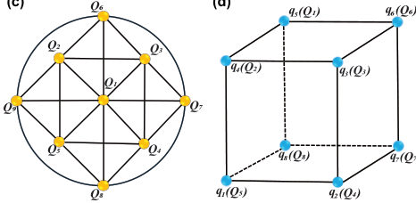
<figcaption class="paper-figure-caption"><b>Fig 1.</b> FIG. 1. State-operator correspondence and device schematic. (a) The four lowest renormalized energy levels of the TFIM on sphere. Red circles denote the levels in the Z2 even sector, while blue circles denote the levels in the Z2 odd sector. (b) Low-lying spectrum of the 3D Ising CFT. The red star marks the scaling dimension of the primary field ϵ, while the blue squares mark the scaling dimensions of the primary field σ and its descendant ∂σ. (c) Schematic of the L9 processor, showing nine qubits with a tunable coupler integrated into every inter- qubit link (solid black line). (d) Cubic lattice mapped onto the L9 chip: each vertex corresponds to a physical qubit, as indicated by the...</figcaption>
</figure>
<figure class="paper-figure-card">
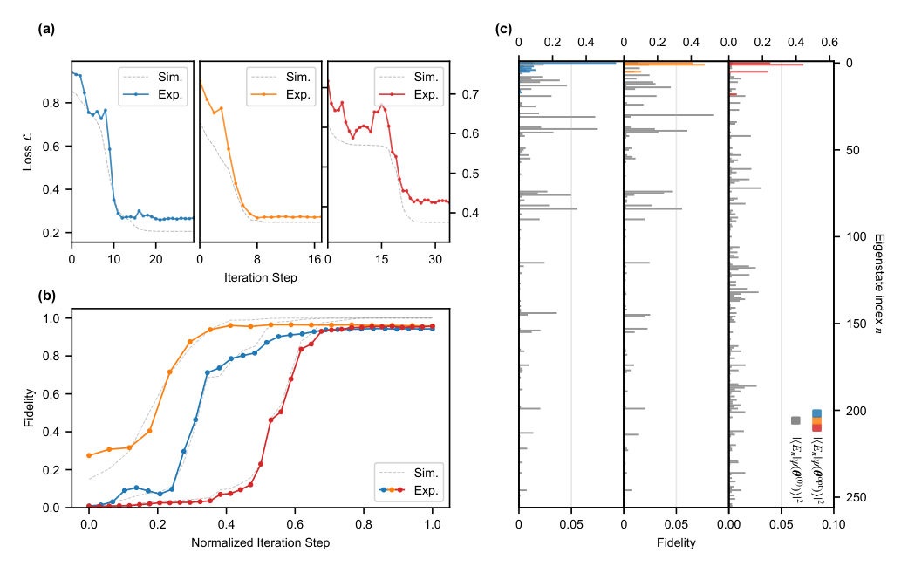
<figcaption class="paper-figure-caption"><b>Fig 2.</b> FIG. 2. Variational optimization of quantum states for three different initial configurations. (a) Loss function L versus optimization iteration step for initial states |00000001⟩, |00000010⟩, and |00000101⟩, with corresponding parameter of evolution times τ = 13.2, 12.7, 16.7, respectively. The dashed grey curves denote numerical simulation; solid circles connected by lines are experimental data, shown in blue, orange, and red. The loss decays and converges approximately at steps 10, 8, and 24, respectively. (b) State fidelity with respect to the final converged state as a function of normalized iteration step (mapped to [0, 1] for comparison). The same color scheme and line styles as in...</figcaption>
</figure>
<figure class="paper-figure-card">
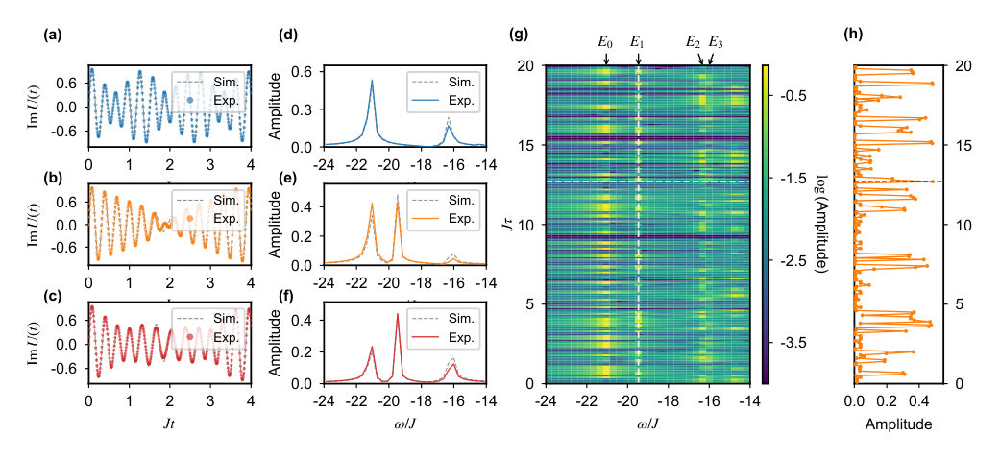
<figcaption class="paper-figure-caption"><b>Fig 3.</b> FIG. 3. Time evolution and spectral analysis for the three optimized states. (a-c) Imaginary part of the expectation value Im⟨ψopt exp|e−iHpt|ψopt exp⟩versus time t for the final states prepared from the initial configurations |ψ0⟩= |00000001⟩(a), |00000010⟩ (b), and |00000101⟩(c), each with its corresponding evolution time τ used in the optimization. The time series is computed over a window Jt ∈[0, 20]; panels (a-c) show an enlarged view of the short-time region Jt ∈[0, 4]. Dashed grey curves are numerical simulations; solid circles (blue, orange, red) are calculated from the experimentally measured states. (d-f) Discrete Fourier transform (DFT) amplitude of the full time-domain signals...</figcaption>
</figure>
<figure class="paper-figure-card">
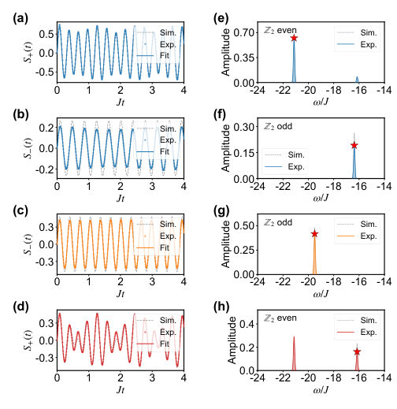
<figcaption class="paper-figure-caption"><b>Fig 4.</b> FIG. 4. Parity-resolved time-domain signals and spectral identification of eigenenergies. (a-d) Imaginary part of the parity-resolved time-domain signals for the three initial con- figurations. (a, b) Even- (a) and odd-channel (b) signals S+(t) and S−(t) for the state prepared from |00000001⟩(Jτ = 13.2). (c) Odd-channel signal S+(t) for the state from |00000010⟩ (Jτ = 12.7). (d) Even-channel signal S−(t) for the state from |00000101⟩(Jτ = 16.7). In all panels, grey dashed curves show numerical simulations; solid colored circles represent ex- perimental data; solid colored lines are fitting curves to the experimental points. (e-h) Amplitude spectra obtained from multi-component sinusoidal...</figcaption>
</figure>
</div>

<p><strong>Summary.</strong> The research demonstrates how to use superconducting qubits on Platonic lattices to digitally simulate the complex physics of 3D Ising criticality. By employing advanced VQE and time-evolution analysis techniques, the authors successfully extract key critical exponents that validate theoretical predictions. This establishes a powerful blueprint for using quantum computation to solve intractable problems in condensed matter statistical mechanics.</p>
<p><strong>Why it may be interesting.</strong> This work provides a concrete, near-term experimental pathway for probing fundamental concepts in statistical mechanics—namely, universal critical phenomena—using solid-state quantum hardware.</p>
<details>
<summary>Detailed structure</summary>
<p><strong>Main problem.</strong> The primary goal is to determine the universal critical exponents of the analytically intractable three-dimensional (3D) Ising model using quantum simulation techniques.</p>
<p><strong>Main result.</strong> The quantum simulation successfully extracted scaling dimensions ($\Delta_\epsilon = 1.5850$) and critical exponents ($
u = 0.7067$) that show strong agreement with established theoretical predictions from conformal field theory.</p>
<p><strong>Method.</strong> A hybrid quantum-classical approach combining an extended Variational Quantum Eigensolver (VQE) protocol with time-evolution analysis via Discrete Fourier Transform (DFT) is used to extract low-lying energy eigenvalues.</p>
<p><strong>Model / system.</strong> The system models the 3D Ising criticality using the Transverse-Field Ising Model Hamiltonian ($H_p$) implemented on superconducting qubits arranged in Platonic lattice geometries (e.g., cubic lattice).</p>
<p><strong>Key observables.</strong> Critical exponents ($
u, \eta$), scaling dimensions ($\Delta_\sigma, \Delta_\epsilon$), and low-lying eigenenergies of the TFIM.</p>
<p><strong>Important parameters / regimes.</strong> The critical transverse field ($h_c/J = 2.46$) and lattice connectivity (e.g., 12 edges for a cube).</p>
<p><strong>Assumptions / limitations.</strong> The method assumes that low-lying energy levels are sufficient to characterize the universal critical behavior, and it relies on mapping continuum CFT operators onto discrete qubit eigenstates.</p>
<p><strong>Figures summary.</strong> Figures illustrate state-operator correspondence between TFIM spectra and 3D Ising CFT spectra; time-domain signals show clear spectral peaks in Fourier transforms confirming extracted eigenenergies.</p>
<p><strong>Paper structure.</strong> The paper progresses from establishing the theoretical link (state-operator correspondence) to detailing the quantum simulation protocol (VQE, phase-based loss function), demonstrating eigenvalue extraction via DFT on superconducting hardware, and finally calculating critical exponents using these measured spectral properties.</p>
</details>
<details>
<summary>Abstract</summary>
<p>The three-dimensional (3D) Ising model is a foundational model in statistical physics and critical phenomena, yet its analytical intractability has long impeded the precise determination of universal critical exponents. While high-precision estimates have been obtained through classical numerical methods and conformal bootstrap techniques, a direct quantum simulation of the 3D Ising criticality remains challenging, requiring nontrivial connectivity, sufficient system size, and high spectral resolution. In this work, assisted by the state-operator correspondence of conformal field theory, we perform a digital quantum simulation of the 3D Ising critical exponents using a multiply-connected 9-qubit superconducting quantum processor with a Platonic lattice geometry. Employing an extended variational quantum eigensolver equipped with a phase-based loss function, we variationally prepare the low-energy eigenstates of the transverse-field Ising model on a cubic Platonic lattice encoded in an 8-qubit register. The four lowest eigenenergies are extracted via Fourier-transform analysis and high-precision numerical fitting, agreeing with the exact diagonalization values up to +/- 0.001. The resulting scaling dimension Delta_epsilon = 1.5850 and critical exponent nu = 0.7067 match well with theory.</p>
</details>
<p><sub><a href="#top">↑ back to top</a></sub></p>

<p><a id="paper-2606.16424"></a></p>
<h3 id="real-space-spectral-functions-of-three-dimensional-billion-size-topological-non-hermitian-matter-with-tensor-networks"><a href="http://arxiv.org/abs/2606.16424v1">Real-space spectral functions of three-dimensional billion-size topological non-Hermitian matter with tensor networks</a></h3>
<p><strong>Authors:</strong> Yitao Sun, Jose L. Lado, Guangze Chen<br>
<strong>Type:</strong> theory · <strong>Category:</strong> numerical methods · <strong>PDF:</strong> <a href="https://arxiv.org/pdf/2606.16424v1">https://arxiv.org/pdf/2606.16424v1</a><br>
<strong>Analysis basis:</strong> full PDF text, analyzed in chunks
<strong>Topic relevance:</strong> 🔥 <code>methods for driven-dissipative</code> <strong>4/5</strong> · <code>driven-dissipative phase transition</code> <strong>2/5</strong> · <code>Kondo &amp; dissipative impurity</code> <strong>1/5</strong> · <code>analog quantum simulation</code> <strong>1/5</strong> · <code>correlated / nonlocal dissipation</code> <strong>1/5</strong> · <code>non-equilibrium dynamics</code> <strong>1/5</strong></p>
<div class="figure-strip-hint">↔ Scroll figures horizontally</div>
<div class="paper-figures-scroll">
<figure class="paper-figure-card">

<figcaption class="paper-figure-caption"><b>Fig 1.</b> FIG. 1. Schematic of the tensor network algorithm and the system of interest. Panel (a) shows an example of the ten- sorization of a 3D tight-binding system. Panel (b) shows the Hermitization process of the non-Hermitian Hamiltonian. With the KPM method, the spectral function of the system is obtained through MPS-MPO-MPS contraction. Panel (c) illustrates the three-dimensional BBH-type lattice models in which we demonstrate our methodology. The highlighted cor- ner region is enlarged to show the non-Hermitian potential pattern. A π flux is threaded through each plaquette via the Peierls substitution. Red and blue sites denote positive and negative imaginary on-site potentials, respectively.</figcaption>
</figure>
<figure class="paper-figure-card">

<figcaption class="paper-figure-caption"><b>Fig 2.</b> FIG. 2. Spectral function with exact solvers in a small system (4096 sites). Panels (a) and (b) correspond to the weak-loss regime (λ = 2), where a single isolated corner-mode sector is observed. Panels (c)-(g) show the strong-loss regime (λ = 5), where the corner-mode manifold splits into multiple in-gap modes with distinct LDOS localization patterns. All in-gap modes are highlighted by red circles.</figcaption>
</figure>
<figure class="paper-figure-card">

<figcaption class="paper-figure-caption"><b>Fig 3.</b> FIG. 3. Tensor-network results for the weak-loss regime (λ = 1.4) in the 10243 ≈109 system. Panel (a) shows the corner DOS on the complex plane with a single broadened in-gap mode separated from the bulk continuum, while (b) shows a cut of (a) with Re(E) = 0. Panel (c) shows the corner LDOS corresponding to the in-gap mode demonstrating localization within the selected corner cube of the system.</figcaption>
</figure>
<figure class="paper-figure-card">

<figcaption class="paper-figure-caption"><b>Fig 4.</b> FIG. 4. Tensor-network results for the strong-loss regime (λ = 5) in the 10243 ≈109 system. Panel (a) shows the corner LDOS on the complex plane where multiple isolated modes emerge along the imaginary-energy axis. The spectral cut (b) at Re(E) = 0 further probes the hierarchical splitting of the corner modes. Panel (c)-(f) show the corner LDOS for the in-gap modes at different complex energies, revealing distinct localization patterns within the same corner cube as in Fig. 3.</figcaption>
</figure>
</div>

<p><strong>Summary.</strong> The paper introduces a novel tensor-network method combining QTCI and KPM to overcome the massive computational hurdle of simulating billion-site non-Hermitian Hamiltonians. By applying this technique to 3D topological insulators, they successfully resolve corner-mode spectral features in the macroscopic limit. This establishes tensor networks as a powerful tool for analyzing complex open quantum systems.</p>
<p><strong>Why it may be interesting.</strong> This work directly addresses computational bottlenecks in studying complex open quantum systems by providing a scalable numerical tool (TN) for calculating spectral properties in large non-Hermitian lattices.</p>
<details>
<summary>Detailed structure</summary>
<p><strong>Main problem.</strong> The primary challenge is calculating real-space spectral functions for extremely large (billion-site) three-dimensional topological non-Hermitian systems.</p>
<p><strong>Main result.</strong> The authors successfully developed and demonstrated a tensor-network framework capable of resolving corner-mode spectral responses in genuinely 3D, macroscopic non-Hermitian systems.</p>
<p><strong>Method.</strong> They combine Quantics Tensor Cross Interpolation (QTCI) with the Kernel Polynomial Method (KPM) to achieve compact representations of large Hamiltonians via Matrix Product Operator (MPO) forms.</p>
<p><strong>Model / system.</strong> The study focuses on 3D non-Hermitian higher-order topological insulators described by a tight-binding Hamiltonian incorporating loss terms ($\lambda$).</p>
<p><strong>Key observables.</strong> Real-space spectral functions, Local Density of States (LDOS), and the identification of distinct in-gap corner modes.</p>
<p><strong>Important parameters / regimes.</strong> Loss strength ($\lambda$), system size (up to $10^9$ sites), and bond dimension ($\chi$).</p>
<p><strong>Assumptions / limitations.</strong> The method assumes that the large Hamiltonian can be effectively compressed into an MPO form using QTCI.</p>
<p><strong>Figures summary.</strong> Figures illustrate spectral functions showing isolated corner modes in weak-loss regimes and hierarchical splitting of multiple in-gap modes in strong-loss regimes, confirming localization patterns.</p>
<p><strong>Paper structure.</strong> The paper introduces the problem (large non-Hermitian systems), develops the tensor-network methodology combining QTCI and KPM for MPO representation, applies this to 3D HOTIs with loss terms, and presents results showing spectral resolution across different loss regimes.</p>
</details>
<details>
<summary>Abstract</summary>
<p>Non-Hermitian systems host a wide range of unconventional topological phenomena while large-scale simulations in finite three dimensional systems remain challenging because of the rapidly growing number of sites. In particular, higher-order topological corner modes are often studied only in small lattices, where strong finite-size effects can mask their intrinsic behavior. Here, we develop a tensor-network framework that combines quantics tensor cross interpolation with the kernel polynomial method, enabling compact representations of large non-Hermitian tight-binding Hamiltonians and direct calculations of real-space spectral functions for systems exceeding one billion lattice sites. Using this approach, we investigate three-dimensional non-Hermitian higher-order topological insulators with with structured real-space geometries. The unprecedented system size enables direct access to the macroscopic regime and allows corner-mode spectral responses to be resolved in genuinely three-dimensional systems.By tuning the loss strength, we identify distinct in-gap corner modes across weak- and strong-loss regimes.Our results establish tensor-network algorithms as a powerful strategy to perform real-space spectral calculations in exceptionally large non-Hermitian systems.</p>
</details>
<p><sub><a href="#top">↑ back to top</a></sub></p>

<p><a id="paper-2606.16741"></a></p>
<h3 id="scalable-generation-of-heralded-single-photons-via-active-feed-forward-switching-of-a-fiber-delay-line"><a href="http://arxiv.org/abs/2606.16741v1">Scalable generation of heralded single photons via active feed-forward switching of a fiber delay line</a></h3>
<p><strong>Authors:</strong> Xavier Barcons Planas, Helen M. Chrzanowski, Janik Wolters<br>
<strong>Type:</strong> experiment · <strong>Category:</strong> quantum information and computing · <strong>PDF:</strong> <a href="https://arxiv.org/pdf/2606.16741v1">https://arxiv.org/pdf/2606.16741v1</a><br>
<strong>Analysis basis:</strong> full PDF text, analyzed in chunks
<strong>Topic relevance:</strong> 🔥 <code>quantum optics experiment</code> <strong>4/5</strong> · <code>quantum measurements</code> <strong>3/5</strong> · <code>QC/QI experiment</code> <strong>1/5</strong> · <code>interference shaping light</code> <strong>1/5</strong> · <code>measurement-induced transitions</code> <strong>1/5</strong></p>
<div class="figure-strip-hint">↔ Scroll figures horizontally</div>
<div class="paper-figures-scroll">
<figure class="paper-figure-card">

<figcaption class="paper-figure-caption"><b>Fig 1.</b> FIG. 1. (a) Concept of photon synchronization via multiplexing (MUX) using a free-space-fiber hybrid switchable delay line. Telecom and narrow-band photons heralded from a photon-pair source are stored in the system using a free-space electro-optic switch and released at clock-synchronized time bins. (b) Experimental setup based on the concept presented in (a), in which the optical switch is implemented by combining a polarizing beamsplitter with a Pockels cell. Narrow-band telecom photons are generated via SPDC in a monolithic cavity [6] and synchronized with the fiber delay line. HWP: half-wave plate; PBS: polarizing beamsplitter; PC: Pockels cell; EPG: electrical pulse generator; SNSPD:...</figcaption>
</figure>
<figure class="paper-figure-card">

<figcaption class="paper-figure-caption"><b>Fig 2.</b> FIG. 2. Measured 1-photon detection rate R1 as a function of the mean photon number per pulse µ and the number of multi- plexed time bins N. The marker color encodes the measured higher-order photon-number contributions. Both quantities are defined as cumulative over N for a fixed µ (g(2) h (0) as a weighted average), indicating the marginal increase of g(2) h (0) with multiplexing, whereas the multiplexed rate is enhanced by approximately one order of magnitude. The surface points are described by the theory (Eq. 1 for n = 1).</figcaption>
</figure>
<figure class="paper-figure-card">

<figcaption class="paper-figure-caption"><b>Fig 3.</b> FIG. 3. (a) Measured n-photon detection rates Rn, and (b) measured multi-photon contamination g(2) h (0) as a function of the mean photon number per pulse µ for multiplexed (MUX, solid dark lines) and non-multiplexed (NMUX, dashed light lines) configurations. The theoretically predicted n-photon rates (Eq. 1) are overlaid in (a), and a linear regression is ap- plied to the data points in (b). The integration time for each data point is 10 (20) min for MUX (NMUX) configurations. The error bars are derived from Poissonian photon counting statistics.</figcaption>
</figure>
</div>

<p><strong>Summary.</strong> The paper presents an experimental demonstration of enhancing single-photon source rates by temporally multiplexing multiple photon emission events using a hybrid free-space-fiber delay line. By implementing active feed-forward switching, the system achieves significant rate enhancements (up to 180-fold for three photons) while maintaining high fidelity in the heralded signal stream.</p>
<p><strong>Why it may be interesting.</strong> This work directly addresses a critical bottleneck in quantum networking: generating high-rate, synchronized entangled or heralded photon pairs. The use of active feedback to engineer time-domain resources is highly relevant for building scalable photonic quantum repeaters or sources.</p>
<details>
<summary>Detailed structure</summary>
<p><strong>Main problem.</strong> The core challenge is achieving quasi-deterministic single-photon generation at high count rates, synchronized to an external clock, which is essential for scaling photonic quantum technologies.</p>
<p><strong>Main result.</strong> The authors demonstrated temporal synchronization of multiple heralded photon-generation events across up to 20 time bins, leading to significant rate enhancements (e.g., 180-fold for three photons) compared to non-multiplexed sources.</p>
<p><strong>Method.</strong> The technique employs a free-space-fiber hybrid delay line combined with active feed-forward switching triggered by the detection of an idler photon to store and release signal photons on demand.</p>
<p><strong>Model / system.</strong> The system utilizes a monolithic cavity Spontaneous Parametric Down-Conversion (SPDC) source producing narrow-band, telecom-wavelength photons. The temporal multiplexing is achieved using a delay line incorporating fiber and a free-space section controlled by a Pockels cell and polarizing beamsplitter.</p>
<p><strong>Key observables.</strong> 1-photon detection rate ($R_1$), heralded second-order autocorrelation $g^{(2)}_h(0)$, and the enhancement factor for $n$-photon rates ($E_n$).</p>
<p><strong>Important parameters / regimes.</strong> The cycle transmission ($\eta_c$) was measured to be 89%; synchronization is demonstrated across up to 20 time bins.</p>
<p><strong>Assumptions / limitations.</strong> Rate enhancement formulas are assumed valid in the low gain regime where multi-pair contributions are minimized; performance scaling is limited by engineering constraints.</p>
<p><strong>Figures summary.</strong> Figures illustrate the concept diagram of photon multiplexing, the experimental setup involving the cavity source and delay line components, measured coherence time vs. delay cycles, and rate/contamination measurements comparing multiplexed versus non-multiplexed operation.</p>
<p><strong>Paper structure.</strong> The paper progresses from introducing the need for deterministic sources to detailing the hybrid free-space-fiber architecture, presenting experimental characterization of component efficiencies, demonstrating the synchronization mechanism via feed-forward control, and finally quantifying the rate enhancement achieved through temporal multiplexing.</p>
</details>
<details>
<summary>Abstract</summary>
<p>Quasi-deterministic single-photon generation is a key requirement for many photonic quantum technologies. Photon sources based on spontaneous parametric down-conversion (SPDC) are widely used for producing high-quality photons; however, the probabilistic nature of the process limits the generation of synchronized multi-photon states. Here, we demonstrate temporal synchronization of multiple photon-generation events using a free-space-fiber hybrid delay line with feed-forward control, enabling fast and efficient switching and scalable operation. Narrow-band, telecom-wavelength photons compatible for fiber transmission are heralded from a monolithic cavity SPDC source and synchronized across 20 time bins. This yields a sixfold enhancement in synchronized rates and enables multi-photon synchronization, with only a marginal increase of higher-order photon-number contributions.</p>
</details>
<p><sub><a href="#top">↑ back to top</a></sub></p>

<p><a id="paper-2606.15398"></a></p>
<h3 id="watching-a-superconducting-coplanar-waveguide-heat-up-with-a-single-color-center"><a href="http://arxiv.org/abs/2606.15398v1">Watching a Superconducting Coplanar Waveguide Heat Up with a Single Color Center</a></h3>
<p><strong>Authors:</strong> Ioannis Karapatzakis, Jeremias Resch, David Hunger, Wolfgang Wernsdorfer<br>
<strong>Type:</strong> experiment · <strong>Category:</strong> quantum information and computing · <strong>PDF:</strong> <a href="https://arxiv.org/pdf/2606.15398v1">https://arxiv.org/pdf/2606.15398v1</a><br>
<strong>Analysis basis:</strong> full PDF text, analyzed in chunks
<strong>Topic relevance:</strong> 🔥 <code>QC/QI experiment</code> <strong>4/5</strong> · <code>spintronics-quantum-optics interface</code> <strong>3/5</strong> · <code>methods for driven-dissipative</code> <strong>1/5</strong> · <code>quantum measurements</code> <strong>1/5</strong> · <code>quantum optics experiment</code> <strong>1/5</strong></p>
<div class="figure-strip-hint">↔ Scroll figures horizontally</div>
<div class="paper-figures-scroll">
<figure class="paper-figure-card">

<figcaption class="paper-figure-caption"><b>Fig 1.</b> FIG. 1. (a) Rendered image of the SnV center in diamond. (b) Reduced energy level diagram of the SnV center. In a magnetic field, spin degeneracy is lifted. The corresponding transitions are labeled as A1 (blue) and B2 (red). (c) PLE measurement of the C-transition of SnV-F as a function of temperature. The 2D plot shows the spectral response from 20 K down to 1 K, illustrating the evolution of the transition linewidth and position. In order to better visualize the transitions at elevated temperatures, the data have been normalized globally and plotted on a logarithmic scale. The center position of the transition is indicated with a green line. The frequency axis is offset by 484.170 883...</figcaption>
</figure>
<figure class="paper-figure-card">

<figcaption class="paper-figure-caption"><b>Fig 2.</b> FIG. 3. (a) Schematic illustration of the allowed transi- tions A1 (blue) and B2 (red) of SnV-F extracted from angu- lar sweeps and the relative orientation of the transitions with respect to the SC-CPW structure (grey CPW) on the dia- mond. The SnV axis is indicated by the yellow arrow, while the black arrows denote the external magnetic field orienta- tions applied in subsequent measurements. For θ2 = 84◦, the allowed transitions intersect (black dots). The lab frame is represented by the red coordinate system. (b) Temperature dependence of the spin-lattice relaxation time T1 for a mag- netic field of 400 mT at an angle of θ1 = 20◦. Around 2.5 K, T1 exhibits saturation-like behavior due...</figcaption>
</figure>
<figure class="paper-figure-card">

<figcaption class="paper-figure-caption"><b>Fig 3.</b> FIG. 2. Temperature dependence of the C-transition lineshift (a) and linewidth (b). The black dots show the extracted lineshift/linewidth from the PLE measurements in Fig 1(c). In (a), the main figure shows a pronounced lineshift above 12 K. The solid green lines show the polynomial fit (c0 + c1T + c2T 2 + c4T 4). The inset zooms in on the low- temperature regime from 1 −13 K, highlighting the positive T 2 contribution. In (b), the main figure reveals a broadening above 5 K. The solid green line shows the fit using a poly- nomial model c + c3T 3 + c7T 7. The inset zooms in on the low-temperature region from 1 −10 K, highlighting the low- temperature precision of the polynomial fits.</figcaption>
</figure>
<figure class="paper-figure-card">

<figcaption class="paper-figure-caption"><b>Fig 4.</b> Fig. 3(b) shows the temperature dependence of T1 mea- sured at a magnetic field of B = 400 mT and an angle of θ1 = 20◦. This off-axis configuration suppresses T1 by approximately two orders of magnitude compared to a field parallel to the SnV axis, reducing T1 to values that can be measured within a practical acquisition time and allowing an accurate characterization of the spin–lattice relaxation. For example, at 1.8 K (indicated by the pur- ple vertical line), we find T1 ≈45 ms, and we use this</figcaption>
</figure>
<figure class="paper-figure-card">

<figcaption class="paper-figure-caption"><b>Fig 5.</b> FIG. 4. Two-dimensional PLE maps (top row) recorded as a function of laser detuning and applied input power for a MW- pulse train at fbias = 2 GHz (on-time 10 µs, off-time 40 µs) and a base temperature Tbase = 1.1 K. (a) B = 0: the degenerate C-transition remains visible throughout the scan and is tracked continuously. (b) B = 400 mT, θ = 84◦: scan around the A1/B2-crosspoint. (c) B = 400 mT, θ = 20◦: lifted spin degeneracy. Below the breakdown threshold the A1-transition is suppressed by optical spin pumping and becomes visible once heating shortens T1. Grey dashed lines indicate the critical power Pcrit at which the superconducting state collapses. Middle row: extracted center-frequency...</figcaption>
</figure>
</div>

<p><strong>Summary.</strong> The research develops an on-chip thermometer using single $    ext{SnV}$ color centers to measure local temperature changes within superconducting waveguides. By monitoring optical and spin properties, the authors characterize how MW/RF driving induces heating, ultimately defining safe operational power limits crucial for building reliable quantum network nodes.</p>
<p><strong>Why it may be interesting.</strong> This work directly addresses a critical engineering challenge in solid-state quantum computing: maintaining stable cryogenic temperatures while applying high-power microwave signals necessary for qubit manipulation or readout.</p>
<details>
<summary>Detailed structure</summary>
<p><strong>Main problem.</strong> The primary goal is quantifying local heating effects induced by microwave (MW) or radio-frequency (RF) control fields in superconducting coplanar waveguides patterned on diamond substrates.</p>
<p><strong>Main result.</strong> The study defines a safe operating window for such structures, showing that at relevant RF frequencies and magnetic fields, no measurable heating occurs up to high power thresholds, unlike MW driving which causes abrupt breakdown.</p>
<p><strong>Method.</strong> A local thermometer based on single color centers ($    ext{SnV}$) in diamond is used. Temperature is inferred by monitoring the spectral shift and linewidth of optical transitions, supplemented by spin-lattice relaxation time ($T_1$) measurements.</p>
<p><strong>Model / system.</strong> The platform consists of a superconducting Niobium (Nb) coplanar waveguide patterned on a diamond membrane hosting $    ext{SnV}$ color centers. Temperature calibration uses both optical spectroscopy and $T_1$ measurements across cryogenic temperatures.</p>
<p><strong>Key observables.</strong> $  ext{SnV}$ C-transition frequency/linewidth, electron spin $T_1$ relaxation time, superconducting breakdown threshold ($P_{	ext{crit}}$), and thermal relaxation time ($    au_{th}$).</p>
<p><strong>Important parameters / regimes.</strong> Temperatures ranging from 20 K down to the few-kelvin regime; magnetic fields up to 400 mT; input powers in the $10 	ext{ dBm}$ range.</p>
<p><strong>Assumptions / limitations.</strong> The linewidth is assumed to be a more reliable thermometer than the lineshift at very low temperatures. The slow thermal recovery time ($    au_{th}$) is attributed primarily to the adhesive layer rather than the diamond bulk.</p>
<p><strong>Figures summary.</strong> Figures illustrate $   ext{SnV}$ spectral shifts vs. temperature (Fig. 1, 2), schematic setups showing defect orientation relative to waveguides (Fig. 3), and power-dependent measurements of $T_1$ or fluorescence recovery time ($    au_{th}$) during pulsed driving.</p>
<p><strong>Paper structure.</strong> The paper establishes the local thermometer using $    ext{SnV}$ spectroscopy across temperature regimes, applies this probe to measure heating from superconducting waveguides under varying MW/RF conditions, and concludes by defining safe operational limits for quantum control structures.</p>
</details>
<details>
<summary>Abstract</summary>
<p>Single color centers in diamond offer a local probe of their cryogenic environment, providing a direct way to quantify heating in spin-control hardware. Here, we establish a single spectrally stable tin-vacancy (SnV) center as an on-chip thermometer for a diamond membrane and use it to characterize microwave- and radio-frequency-induced heating in a superconducting coplanar waveguide patterned on the same chip. We first calibrate the temperature dependence of the optical C-transition frequency and linewidth from $20\,\mathrm{K}$ down to the few-kelvin regime. At lower temperatures, where the optical response becomes weakly temperature dependent, we use the spin-lattice relaxation time $T_1$ as a complementary thermometer and tune its sensitivity with the transverse magnetic-field component. Applying this local thermometer to a niobium coplanar waveguide, we observe magnetic-field-dependent superconducting breakdown under GHz drive, accompanied by abrupt heating of the diamond. In contrast, at $20\,\mathrm{MHz}$ and $400\,\mathrm{mT}$, relevant for nuclear-spin control, we detect no measurable heating up to the breakdown threshold of $9.4\,\mathrm{dBm}$, corresponding to $B_\mathrm{ac}\sim1.2\,\mathrm{mT}$. These results define a safe operating window for superconducting microwave and RF control structures in diamond-based quantum nodes.</p>
</details>
<p><sub><a href="#top">↑ back to top</a></sub></p>

<p><a id="paper-2606.16549"></a></p>
<h3 id="what-does-measuring-one-qubit-reveal-about-another-math502math-networks-as-a-directed-diagnostic-for-quantum-circuits"><a href="http://arxiv.org/abs/2606.16549v1">What does measuring one qubit reveal about another? $K$-networks as a directed diagnostic for quantum circuits</a></h3>
<p><strong>Authors:</strong> Kostas Blekos, Paulo Vitor Itaboraí<br>
<strong>Type:</strong> theory · <strong>Category:</strong> quantum information and computing · <strong>PDF:</strong> <a href="https://arxiv.org/pdf/2606.16549v1">https://arxiv.org/pdf/2606.16549v1</a><br>
<strong>Analysis basis:</strong> full PDF text, analyzed in chunks
<strong>Topic relevance:</strong> 🔥 <code>entanglement &amp; information structure</code> <strong>4/5</strong> · <code>quantum measurements</code> <strong>3/5</strong> · <code>measurement-induced transitions</code> <strong>2/5</strong> · <code>non-equilibrium dynamics</code> <strong>1/5</strong></p>
<div class="figure-strip-hint">↔ Scroll figures horizontally</div>
<div class="paper-figures-scroll">
<figure class="paper-figure-card">

<figcaption class="paper-figure-caption"><b>Fig 1.</b> Figure 1: Schematic definition of the measurement-conditioned pairwise score Ki→j. A two- outcome projective measurement on qubit i prepares conditional states ρj|0 and ρj|1 on qubit j with probabilities p0 and p1. When both branches occur, the score K combines the branching balance factor 4p0p1 (maximal when p0 = p1 = 1</figcaption>
</figure>
<figure class="paper-figure-card">

<figcaption class="paper-figure-caption"><b>Fig 2.</b> Figure 2: Directed K(Z)-network for the four-qubit state in Example 1. The highlighted pair has K(Z) 1→2 = 1/2 and K(Z) 2→1 = 0; the remaining arrows give the surrounding pairwise context.</figcaption>
</figure>
<figure class="paper-figure-card">

<figcaption class="paper-figure-caption"><b>Fig 3.</b> Figure 3: Evolution of the K-network through one Grover iteration (3 qubits, target |101⟩). (a) After Hadamard: K = 0 (uniform superposition has no measurement-induced correlations). (b) After Oracle: K = 0.5 (peak correlations from phase marking). (c) After Diffuser: K = 1/8 = 0.125 (correlations redistributed as target amplitude is amplified).</figcaption>
</figure>
<figure class="paper-figure-card">

<figcaption class="paper-figure-caption"><b>Fig 4.</b> Figure 4: K-network for a 4-qubit QAOA circuit (p = 1, γ = 0.4, β = 0.2) on a ring MaxCut problem. Edge thickness and color indicate Ki→j values; arrows show directionality, and the two displayed labels give representative values. Ring neighbors (0–1, 1–2, 2–3, 3–0) have K ≈0.25, while diagonal pairs (0–2, 1–3) have K ≈0.04.</figcaption>
</figure>
<figure class="paper-figure-card">

<figcaption class="paper-figure-caption"><b>Fig 5.</b> Figure 5: Comparison of K-network and MI-network for the same 4-qubit QAOA state. (a) The K-network (directed, red edges) distinguishes ring neighbors from diagonal pairs. (b) The MI- network (undirected, blue edges) shows nearly uniform weights across all pairs. Edge thickness is proportional to K or I; MI is normalized to its maximum value for visualization.</figcaption>
</figure>
</div>

<p><strong>Summary.</strong> The paper introduces $K_{i	o j}$, a directed diagnostic measure quantifying how measuring qubit $i$ reveals information about qubit $j$. It calculates this score using the distinguishability of post-measurement conditional states. This metric proves superior to standard mutual information by capturing measurement-conditioned, directional correlations essential for analyzing quantum circuit structure.</p>
<p><strong>Why it may be interesting.</strong> This work provides a powerful, quantifiable tool for characterizing the non-local correlations in complex quantum circuits that are sensitive to measurement basis and directionality, which is crucial for understanding quantum computation protocols.</p>
<details>
<summary>Detailed structure</summary>
<p><strong>Main problem.</strong> The authors aim to develop a directed diagnostic measure, $K_{i	o j}$, to quantify how measuring one qubit ($i$) reveals specific conditional information about another qubit ($j$), overcoming limitations of symmetric correlation measures.</p>
<p><strong>Main result.</strong> The resulting $K$-network provides a basis-conditioned, directional map of quantum circuit structure that can distinguish between different types of correlations (e.g., phase vs. classical) missed by mutual information.</p>
<p><strong>Method.</strong> The core method defines $K_{i	o j}$ using the Uhlmann–Jozsa squared fidelity gap ($\Delta F$) between the conditional states $
ho_{j|0}$ and $
ho_{j|1}$, weighted by the outcome probabilities ($p_0, p_1$).</p>
<p><strong>Model / system.</strong> The analysis is performed on general many-qubit circuit states, using two-qubit reduced density matrices ($
ho_{ij}$) to calculate pairwise directed edge weights.</p>
<p><strong>Key observables.</strong> $K_{i	o j}$ (Conditional-distinguishability correlation score), Tangle ($C^2$), Quantum Mutual Information ($I(i:j)$), Classical Mutual Information ($I_Z$).</p>
<p><strong>Important parameters / regimes.</strong> The measurement basis ($\hat{n}$), the outcome probabilities ($p_0, p_1$), and the fidelity gap $\Delta F$.</p>
<p><strong>Assumptions / limitations.</strong> The score is explicitly stated <em>not</em> to be an entanglement measure, as separable classical states can achieve $K=1$; furthermore, it should not be interpreted as a causal structure.</p>
<p><strong>Figures summary.</strong> Figures illustrate the directed asymmetry of $K$-networks for circuits like teleportation and QAOA, showing how they reveal structural details (e.g., phase interactions) that symmetric measures miss.</p>
<p><strong>Paper structure.</strong> The paper introduces the diagnostic measure $K_{i	o j}$ based on conditional state distinguishability, derives its properties (invariance, bounds), and then validates it by comparing its performance against standard correlation metrics across various quantum circuit examples (Grover, QAOA).</p>
</details>
<details>
<summary>Abstract</summary>
<p>Many-qubit circuit states are hard to inspect directly, so they are often summarized by pairwise graph weights. Common pairwise weights report symmetric correlations, while many circuit questions are directed and basis-specific: if qubit $i$ is measured in a given basis, how strongly does the outcome reshape the conditional state of qubit $j$? We define $K_{i\to j}$, a directed, basis-conditioned edge weight for this question. It is large when the two measurement outcomes occur with comparable probability and leave qubit $j$ in clearly different conditional states; it is zero when the source outcome is deterministic or the target states are indistinguishable. The scalar uses standard binary-ensemble distinguishability; the paper's contribution is to turn this conditional comparison into a directed network layer for circuit states. The resulting networks are computable from two-qubit reduced density matrices. They are diagnostic (not entanglement measures): for pure two-qubit states $K$ reduces to the tangle $C^2$ (squared concurrence)~\cite{WoottersConcurrence,CKWTangle}, while separable mixed states can reach $K=1$. Examples on teleportation, Grover, QAOA, and random circuit families show the intended use: $K$-networks map feed-forward, phase, and interaction-graph structure that symmetric or computational-basis summaries can leave weak or absent.</p>
</details>
<p><sub><a href="#top">↑ back to top</a></sub></p>

<p><a id="paper-2606.16959"></a></p>
<h3 id="diagonal-budgeted-trotterization-for-efficient-quantum-hamiltonian-simulation"><a href="http://arxiv.org/abs/2606.16959v1">Diagonal-Budgeted Trotterization for Efficient Quantum Hamiltonian Simulation</a></h3>
<p><strong>Authors:</strong> Srikar Chundury, Blake Burgstahler, Jiajia Li, In-Saeng Suh, Frank Mueller<br>
<strong>Type:</strong> theory · <strong>Category:</strong> numerical methods · <strong>PDF:</strong> <a href="https://arxiv.org/pdf/2606.16959v1">https://arxiv.org/pdf/2606.16959v1</a><br>
<strong>Analysis basis:</strong> full PDF text, analyzed in chunks
<strong>Topic relevance:</strong> 🔥 <code>analog quantum simulation</code> <strong>4/5</strong> · <code>non-equilibrium dynamics</code> <strong>2/5</strong> · <code>entanglement &amp; information structure</code> <strong>1/5</strong> · <code>exotic spin models in light-matter</code> <strong>1/5</strong> · <code>methods for driven-dissipative</code> <strong>1/5</strong></p>
<div class="figure-strip-hint">↔ Scroll figures horizontally</div>
<div class="paper-figures-scroll">
<figure class="paper-figure-card">

<figcaption class="paper-figure-caption"><b>Fig 1.</b> Figure 1: Matrix density (left y-axis) and number of active diagonals (right y-axis) for selected instances from Ham- Lib [36]. Identical x-axis labels correspond to distinct Hamil- tonians of the same category with the same qubit size.</figcaption>
</figure>
<figure class="paper-figure-card">

<figcaption class="paper-figure-caption"><b>Fig 2.</b> Figure 2: Distribution of diagonal indices in 16-qubit Hermit- ian matrices: Heisenberg (left) and TFIM (right).</figcaption>
</figure>
<figure class="paper-figure-card">

<figcaption class="paper-figure-caption"><b>Fig 3.</b> Figure 3: Adaptive timestep selection for diagonal budget 𝐷max. Given Hamiltonian 𝐻and evolution time 𝑡, find the smallest 𝑟satisfying Eq. (5). 𝑟→#steps, 𝑡→total time, 𝑙,𝑢→ bounds on 𝑟.</figcaption>
</figure>
<figure class="paper-figure-card">

<figcaption class="paper-figure-caption"><b>Fig 4.</b> Figure 4: Walkthrough of HamSim SpGEMM (𝐶=𝐴𝐵). (1) A structural pass builds contributors[𝑟] via diagonal-index existence checks. (2) The numeric pass performs 2D tiling over result diagonals (RES_BLOCK) and element ranges (ELEM_BLOCK). (3) Inside a tile, each 𝑟iterates contributor pairs and applies an aligned segment update over [𝑗𝐵𝑎𝑠𝑒, 𝑗𝐸𝑛𝑑), dispatching a SIMD microkernel to write/accumulate into the preallocated 𝐶[𝑟] slice.</figcaption>
</figure>
<figure class="paper-figure-card">

<figcaption class="paper-figure-caption"><b>Fig 5.</b> Fig. 4 illustrates the full execution flow: The structural pass builds contributors[𝑟] for every result diagonal; the numeric pass tiles both the diagonal index space and the element-range space (RES_BLOCK and ELEM_BLOCK); and each tile invokes the Multi- plyDiagonals microkernel, which streams contiguous diagonal segments and performs complex fused multiply-add operations. The figure makes explicit how write-vs-accumulate behavior is handled and how SIMD parallelism is exposed inside each tile. Numerical execution is parallelized across result diagonals. When a diagonal 𝑟has a single contributing pair, its output slice is written directly; when multiple contributors exist, partial results...</figcaption>
</figure>
</div>

<p><strong>Summary.</strong> This paper introduces Diagonal-Budgeted Trotterization, a novel technique to efficiently simulate quantum Hamiltonian dynamics by exploiting the inherent diagonal sparsity of physical Hamiltonians. The authors developed HamSim, an optimized library using specialized data layouts and kernels that achieves massive speedups over existing simulators while maintaining high fidelity across various complex models.</p>
<p><strong>Why it may be interesting.</strong> For AMO physicists working on open quantum systems or many-body dynamics, this work provides a crucial computational tool for simulating time evolution of structured Hamiltonians (like those arising from lattice models) with unprecedented efficiency and accuracy.</p>
<details>
<summary>Detailed structure</summary>
<p><strong>Main problem.</strong> The core challenge is efficiently simulating quantum Hamiltonian dynamics, which suffers from exponential state growth and computational overheads associated with generic sparse linear algebra formats.</p>
<p><strong>Main result.</strong> The proposed method achieves dramatic speedups (up to 1269x on CPU) over existing simulators while maintaining near-perfect fidelity by exploiting the structured sparsity of physical Hamiltonians.</p>
<p><strong>Method.</strong> It introduces Diagonal-Budgeted Trotterization, a structure-aware time evolution strategy that limits computational cost by constraining the growth of non-zero diagonals in intermediate operators. This is implemented using HamSim, which employs a specialized diagonal-sparse data layout and optimized C++/CUDA kernels for matrix operations.</p>
<p><strong>Model / system.</strong> The method applies to quantum systems governed by Hamiltonians (H), tested on diverse models including the Transverse Field Ising Model (TFIM), Heisenberg model, MaxCut, and TSP. The focus is on the structure of these Hamiltonians exhibiting diagonal sparsity due to local interactions.</p>
<p><strong>Key observables.</strong> Simulation time/speedup (e.g., 182–1,269x speedup); State Fidelity ($\approx 1.0$); Matrix Density and Number of Active Diagonals.</p>
<p><strong>Important parameters / regimes.</strong> The diagonal budget ($D_{\max}$) is a key parameter that controls the structural complexity allowed during time evolution; qubit count (up to 16 qubits) and simulation time $T$.</p>
<p><strong>Assumptions / limitations.</strong> It assumes physical Hamiltonians exhibit structured sparsity concentrated along specific diagonals, allowing for a fixed, compact diagonal-major data layout.</p>
<p><strong>Figures summary.</strong> Figures demonstrate the slow growth of matrix density/diagonals vs. qubit size; illustrate the structural challenge of diagonal sparsity; and compare simulation runtimes across various benchmarks (TSP, Heisenberg) showing HamSim's superior scaling.</p>
<p><strong>Paper structure.</strong> The paper first identifies the bottleneck in classical simulation, then proposes Diagonal-Budgeted Trotterization to manage complexity structurally. It details the novel sparse data layout and specialized kernels ($    ext{SpMV}$, $   ext{SpGEMM}$) that exploit this structure. Finally, it presents extensive benchmarks comparing performance and fidelity against state-of-the-art simulators.</p>
</details>
<details>
<summary>Abstract</summary>
<p>Efficient classical simulation of quantum Hamiltonian dynamics is often bottlenecked by exponential state growth and the overhead of generic sparse linear algebra. We introduce diagonal-budgeted Trotterization, a structure-aware strategy that decomposes Hamiltonians into factors preserving diagonal sparsity while tightly controlling fidelity loss.   Our implementation, HamSim, utilizes a compact diagonal-sparse data layout and specialized C++/CUDA kernels to bypass the overheads of generic formats like CSR. By leveraging SIMD vectorization, multithreading, and GPU acceleration, HamSim achieves high performance across heterogeneous architectures. Benchmarks on the HamLib suite show that HamSim significantly outperforms Qiskit-Aer. On CPUs, HamSim attains speedups of $182$--$1,269\times$ on optimization instances (TSP, MaxCut) and $4.8$--$841\times$ on physical models (TFIM, Heisenberg). On GPUs, it achieves up to $178\times$ speedup for $12$--$16$ qubit problems.   Unlike traditional Trotterization, HamSim maintains near-perfect fidelity without requiring exponential steps. This demonstrates that diagonal-aware numerical kernels provide a scalable foundation for high-fidelity classical Hamiltonian simulation.</p>
</details>
<p><sub><a href="#top">↑ back to top</a></sub></p>

<p><a id="paper-2606.16604"></a></p>
<h3 id="electronic-band-structure-of-silicon-determined-via-a-variational-adiabatic-eigensolver-theory-and-experiment"><a href="http://arxiv.org/abs/2606.16604v1">Electronic Band Structure of Silicon Determined via a Variational Adiabatic Eigensolver: Theory and Experiment</a></h3>
<p><strong>Authors:</strong> Xingrui Liu, Liyang Sui, Tianqi Cai, Zhiwen Zong, Kunliang Bu, Wenyan Jin, Bowen Chen, Xutao Zhang, Yufan Li, Zhihao Gong, Yicong Zheng, Shengyu Zhang, Jianlan Wu, Yi Yin<br>
<strong>Type:</strong> both · <strong>Category:</strong> quantum information and computing · <strong>PDF:</strong> <a href="https://arxiv.org/pdf/2606.16604v1">https://arxiv.org/pdf/2606.16604v1</a><br>
<strong>Analysis basis:</strong> full PDF text, analyzed in chunks
<strong>Topic relevance:</strong> 🔥 <code>QC/QI experiment</code> <strong>4/5</strong> · <code>analog quantum simulation</code> <strong>2/5</strong> · <code>methods for driven-dissipative</code> <strong>1/5</strong> · <code>non-equilibrium dynamics</code> <strong>1/5</strong></p>
<div class="figure-strip-hint">↔ Scroll figures horizontally</div>
<div class="paper-figures-scroll">
<figure class="paper-figure-card">

<figcaption class="paper-figure-caption"><b>Fig 1.</b> FIG. 1. (a) The schematic diagrams of three adiabatic eigensolvers: analog (AAE), digitized (DAE)</figcaption>
</figure>
<figure class="paper-figure-card">

<figcaption class="paper-figure-caption"><b>Fig 2.</b> FIG. 2. The numerical simulation of a 10-step VAE in the determination of the W-VB state</figcaption>
</figure>
<figure class="paper-figure-card">

<figcaption class="paper-figure-caption"><b>Fig 3.</b> FIG. 4. Experimental verification of the VAE protocol. (a) The 15 × 15 density matrices of the</figcaption>
</figure>
<figure class="paper-figure-card">

<figcaption class="paper-figure-caption"><b>Fig 4.</b> FIG. 5. Experimental validation of the VAE for determining the W-VB state (refer to Fig. 2).</figcaption>
</figure>
<figure class="paper-figure-card">

<figcaption class="paper-figure-caption"><b>Fig 5.</b> FIG. 6. Experimental determination of the silicon band structure using VAE. (a) Valence and</figcaption>
</figure>
</div>

<p><strong>Summary.</strong> The authors introduce and validate a Variational Adiabatic Eigensolver (VAE) protocol designed to calculate electronic band structures on NISQ devices. By combining adiabatic evolution with variational optimization, they successfully determined the energy levels of silicon's valence and conduction bands. This work establishes a robust, practical framework for quantum simulation in condensed matter physics.</p>
<p><strong>Why it may be interesting.</strong> This work directly addresses the practical limitations of current quantum hardware for solid-state physics, providing a concrete, experimentally validated pathway to simulate complex many-body Hamiltonians (like those governing band structure) using variational quantum algorithms.</p>
<details>
<summary>Detailed structure</summary>
<p><strong>Main problem.</strong> The core challenge is accurately determining excited-state electronic band structures of semiconductors using near-term quantum hardware.</p>
<p><strong>Main result.</strong> The Variational Adiabatic Eigensolver (VAE) protocol successfully prepared silicon's valence and conduction bands, achieving energy agreement within 0.01 eV after spectral fitting.</p>
<p><strong>Method.</strong> A hybrid VAE approach combines adiabatic evolution with variational optimization using parameterized quantum circuits and a phase-based loss function.</p>
<p><strong>Model / system.</strong> The system is Silicon, modeled using the Nearly Free Electron (NFE) model Hamiltonian cast into Pauli operators for simulation on superconducting qubits. The calculation traces paths through the Brillouin zone.</p>
<p><strong>Key observables.</strong> State fidelities (&gt;96%), measured energy expectations ($\vec{E}_{\vec{k}}$), and state distance ($D_j$) tracking adiabatic evolution.</p>
<p><strong>Important parameters / regimes.</strong> Lattice constant $a = 5.43 	ext{ Å}$; the simulation uses a selected 4-qubit system to represent the electronic structure.</p>
<p><strong>Assumptions / limitations.</strong> The NFE model is used for computational tractability, and spectral fitting (single-frequency oscillation) is required to correct direct energy measurements from contamination.</p>
<p><strong>Figures summary.</strong> Figures illustrate schematic comparisons of different eigensolvers (VAE vs AAE/DAE), the hardware ansatz circuit, state distance evolution along paths, and final band structure plots showing excellent agreement with theory.</p>
<p><strong>Paper structure.</strong> The paper progresses by defining the physical problem (Si bands) $
ightarrow$ formulating the Hamiltonian in NFE model $
ightarrow$ detailing the VAE method as an improvement over direct adiabatic methods $
ightarrow$ presenting experimental results on state preparation and energy extraction along high-symmetry paths.</p>
</details>
<details>
<summary>Abstract</summary>
<p>This work addresses the critical challenge of excited-state preparation for semiconductor band structure calculations. We introduce a variational adiabatic eigensolver (VAE) protocol that combines adiabatic evolution with variational optimization to prepare high-fidelity eigenstates on noisy intermediate-scale quantum (NISQ) devices. Applying a momentum-space truncation, we accurately compute the electronic band structure of silicon -- an idealized infinite periodic system -- using only a modest number of qubits. Our approach employs multi-qubit parameterized circuits and a phase-based loss function, overcoming limitations of conventional methods. These limitations include the circuit-construction difficulty in traditional adiabatic approaches and the reduced accuracy of variational quantum eigensolvers for excited states. Through rigorous numerical simulation and experimental implementation on a superconducting quantum processor, we successfully prepare silicon's valence-band and conduction-band eigenstates. Single-shot readout yields state fidelities exceeding 96%, and the measured energy expectations agree with theoretical band energies within 0.5 eV. Further refinement via single-frequency oscillation fitting reduces the energy deviation to below 0.01 eV. This framework provides a robust and practical pathway for precisely determining electronic structures in quantum materials.</p>
</details>
<p><sub><a href="#top">↑ back to top</a></sub></p>

<p><a id="paper-2606.16784"></a></p>
<h3 id="quantum-nonlocal-games-on-graph-ensembles"><a href="http://arxiv.org/abs/2606.16784v1">Quantum Nonlocal Games on Graph Ensembles</a></h3>
<p><strong>Authors:</strong> Joshua Tucker, Chris Weeks, Peter Drmota, Ellis M. Ainley, Ayush Agrawal, Adam R. Martinez, Erin Malinowski, Jacob A. Blackmore, David P. Nadlinger, Gabriel Araneda, David M. Lucas, Carlos A. Perez-Delgado, Paul Strange, Jorge Quintanilla<br>
<strong>Type:</strong> both · <strong>Category:</strong> other · <strong>PDF:</strong> <a href="https://arxiv.org/pdf/2606.16784v1">https://arxiv.org/pdf/2606.16784v1</a><br>
<strong>Analysis basis:</strong> full PDF text, analyzed in chunks
<strong>Topic relevance:</strong> 🔥 <code>QC/QI experiment</code> <strong>4/5</strong> · <code>analog quantum simulation</code> <strong>2/5</strong> · <code>entanglement &amp; information structure</code> <strong>1/5</strong> · <code>non-equilibrium dynamics</code> <strong>1/5</strong></p>
<div class="figure-strip-hint">↔ Scroll figures horizontally</div>
<div class="paper-figures-scroll">
<figure class="paper-figure-card">

<figcaption class="paper-figure-caption"><b>Fig 1.</b> FIG. 1. The games we consider involve two agents, Alice and Bob, coordinating their moves on a graph in order to achieve a common task. They are played in two phases: in phase one (a) Alice and Bob can agree a strategy and share quantum information without knowing their starting locations and with only statistical information about the graph’s topology; in phase two (b-d) Alice and Bob have to make their moves without communicating and using only local information (see main text).</figcaption>
</figure>
<figure class="paper-figure-card">

<figcaption class="paper-figure-caption"><b>Fig 2.</b> FIG. 2. (a) The experimental apparatus used to implement rendezvous games on graph ensembles consists of two trapped 88Sr+ ions. The ions can be entangled remotely by a Bell state measurement (BSM) on two photons that are each entangled with one of the ions. The BSM heralds the creation of the state in Eq. (3) whose phase ϑγ is communicated to Bob. The variables x and y encode the sites at which Alice and Bob have been placed on the graph and the players perform unitary rotations and projective measurements using lasers, yielding binary outcomes a and b, respectively. (b) Relevant electronic level structure of 88Sr+.</figcaption>
</figure>
<figure class="paper-figure-card">

<figcaption class="paper-figure-caption"><b>Fig 3.</b> FIG. 3. Quantum advantage Q [Eq. (4)] – defined as the increase in rendezvous probability when using a quantum strategy over the best classical strategy – for two-player, one-step rendezvous in an uncertain topography, represented by a statistical ensemble of the graphs {C3,C5} (a), {C3,C6} (b), {C3,C7} (c), {C5,C7} (d), and {C3,C5,C7} (e-f). The horizontal axis shows the entropy S of each ensemble [Eq. (1)]. This quantifies the players’ initial topographic uncertainty, before they are placed on their starting site. For each ensemble, the two scenarios described in Fig. 1 are considered: one where less local information is available to the players, shown by the circles joined by dashed...</figcaption>
</figure>
<figure class="paper-figure-card">

<figcaption class="paper-figure-caption"><b>Fig 4.</b> FIG. 4. Quantum advantage for one-step graph domination game played on the {C5,C6} (a) and {C5,C9} (b) families of graph ensembles. The circles joined by dashed lines corre- spond to the case with less local information (Fig. 1c) and the circles joined by solid lines show the case with more local information (Fig. 1d). The positive quantum advantage and its increase when more local information is available mirror our results for rendezvous games.</figcaption>
</figure>
<figure class="paper-figure-card">

<figcaption class="paper-figure-caption"><b>Fig 5.</b> FIG. 5. Calculated quantum advantage Q [Eq. (4)] for two- player, one-step rendezvous in an uncertain topography, rep- resented by a statistical ensemble of the graphs {C3,C9}. The conventions are the same is in Fig. 3 in the main text.</figcaption>
</figure>
</div>

<p><strong>Summary.</strong> This work establishes a concrete route toward achieving quantum advantage in motion coordination problems by analyzing nonlocal games played on graphs with unknown topographies. The authors demonstrate this theoretically using graph ensembles and experimentally validate it using physically separated trapped ion systems. Crucially, they show that the quantum benefit persists under topographical uncertainty and is significantly amplified when players can gather local information.</p>
<p><strong>Why it may be interesting.</strong> The experimental realization of remote entanglement and its application to complex coordination tasks like rendezvous is highly relevant for developing practical quantum networking protocols and understanding how quantum correlations can enhance collective decision-making in noisy or uncertain physical settings.</p>
<details>
<summary>Detailed structure</summary>
<p><strong>Main problem.</strong> The research investigates when quantum entanglement provides a demonstrable advantage over classical strategies for coordinating mobile agents (players) in uncertain environments defined by graph ensembles.</p>
<p><strong>Main result.</strong> Quantum strategies maintain and even enhance their advantage over optimal classical ones, particularly when players gain access to additional local information about the environment's topography.</p>
<p><strong>Method.</strong> The authors develop theoretical frameworks for nonlocal quantum games on graph ensembles and validate them through experimental demonstrations using trapped ion systems and simulations on superconducting hardware.</p>
<p><strong>Model / system.</strong> The core model involves two-player, one-step rendezvous or domination games played on graphs drawn from an ensemble. Experimentally, the platform uses physically separated trapped $^{88}	ext{Sr}^+$ ions to generate remote entanglement.</p>
<p><strong>Key observables.</strong> Quantum Advantage ($Q$), Rendezvous Probability ($P_W$), and Graph Ensemble Entropy ($S$).</p>
<p><strong>Important parameters / regimes.</strong> Topographic Uncertainty (Entropy $S$), the availability of local information ('signposts'), and the specific graph ensembles used ($\{C_3, C_5\}, \{C_3, C_6\}$, etc.).</p>
<p><strong>Assumptions / limitations.</strong> The classical strategy is assumed to be deterministic; quantum strategies rely on shared maximally entangled 2-qubit states and local unitary rotations.</p>
<p><strong>Figures summary.</strong> Figures illustrate the evolution of Quantum Advantage ($Q$) versus Ensemble Entropy ($S$), comparing scenarios with and without additional local information, across different graph ensembles for both rendezvous and domination games.</p>
<p><strong>Paper structure.</strong> The paper builds from defining the nonlocal game on uncertain graphs to demonstrating quantum advantage in the rendezvous scenario using trapped ions. It then extends this analysis to the graph domination game, consistently showing that increased local knowledge boosts the quantum benefit.</p>
</details>
<details>
<summary>Abstract</summary>
<p>Quantum entanglement is one of the most striking discoveries in all of science. This effect allows, for instance, two spatially separated agents to coordinate their actions, without communication, to an extent that is both counter-intuitive, and provably impossible by any other physical means. A recently discovered example is that of mobile agents (players) performing spatial coordination tasks such as rendezvous, where the agents aim to meet on a network without communication. Until now, demonstrations of this advantage have relied on highly idealized conditions: agents are assumed to have complete knowledge of the topography, and experiments have been restricted to simulations using data generated by qubits within a single quantum processor. Here we address both limitations by developing a theory for graph ensembles that capture topographical uncertainty and by experimentally demonstrating the advantage in rendezvous scenarios between physically separated ion-trap systems with access to remote entanglement. Moreover, we simulate a broader set of problems on superconducting hardware. Surprisingly, when players are given the ability to gather more local information the quantum advantage increases -- a feat impossible by classical means. Our findings establish a concrete route toward practical quantum advantages in motion coordination problems. More broadly, they point to a new way of using portable quantum devices to enhance collective decision-making in uncertain environments.</p>
</details>
<p><sub><a href="#top">↑ back to top</a></sub></p>

<p><a id="paper-2606.15672"></a></p>
<h3 id="high-performance-gates-on-trapped-ion-qubits-using-counterpropagating-pulse-shaped-laser-beams"><a href="http://arxiv.org/abs/2606.15672v1">High-performance gates on trapped ion qubits using counterpropagating pulse-shaped laser beams</a></h3>
<p><strong>Authors:</strong> Evangelos Piliouras, Hisham Amer, Susan M. Clark, Melissa C. Revelle, Edward C. Tortorici, Matthew N. H. Chow, Brandon Ruzic, Daniel S. Lobser, Brian K. McFarland, Christopher G. Yale, Edwin Barnes, Sophia E. Economou<br>
<strong>Type:</strong> experiment · <strong>Category:</strong> other · <strong>PDF:</strong> <a href="https://arxiv.org/pdf/2606.15672v1">https://arxiv.org/pdf/2606.15672v1</a><br>
<strong>Analysis basis:</strong> full PDF text, analyzed in chunks
<strong>Topic relevance:</strong> 🔥 <code>QC/QI experiment</code> <strong>4/5</strong> · <code>interference shaping light</code> <strong>1/5</strong> · <code>quantum measurements</code> <strong>1/5</strong> · <code>quantum optics experiment</code> <strong>1/5</strong></p>
<div class="figure-strip-hint">↔ Scroll figures horizontally</div>
<div class="paper-figures-scroll">
<figure class="paper-figure-card">

<figcaption class="paper-figure-caption"><b>Fig 1.</b> FIG. 1. Pulses, space curves, and experimental setup. (a) Control pulses with Ωx = Ωcos Φ, Ωy = Ωsin Φ. (b)– (c) Curve and tangent vectors for the constant pulse and the BARQ pulse, respectively. The hue indicates the time-arclength progression. The BARQ curve (c) is closed (dephasing robustness), by design, and its tangent curve traces zero area (amplitude error robustness), as can be verified visually from its approximate symmetry. The constant-amplitude Xπ/2 pulse is represented as an arc (b) since constant amplitude translates to constant curvature. Lacking the above geometric characteristics, it is naturally susceptible to both types of error. (d) Experimental system. Our system is...</figcaption>
</figure>
<figure class="paper-figure-card">

<figcaption class="paper-figure-caption"><b>Fig 2.</b> FIG. 2. Error accumulation after repeated applica- tions of Xπ/2 gates for various amplitude scales sΩ. To choose the amplitude scale of our noise-robust pulses, the same Xπ/2 gate is repeated up to K = 19 times, only on qubit q[1], which is initialized in |0⟩, and the excited state probabil- ity is measured after each number k of repetitions. The mean- squared error (MSE) is calculated as the average squared dif- ference between the measured values and the expected (nom- inal) probability values for every k ≤K. (a) Experimental results for the copropagating configuration. When sΩ&gt; 2, errors accumulate slightly more for the robust BARQ pulses (red) compared to the non-robust constant-pulse...</figcaption>
</figure>
<figure class="paper-figure-card">

<figcaption class="paper-figure-caption"><b>Fig 3.</b> FIG. 3. Gate set tomography results. Results for each qubit are shown along the horizontal axis, and the average over all four is shown on the right side of each panel. The error bars correspond to 95% confidence intervals. (a) Gate infidelities and (b) diamond distances for each gate in the gateset (except the virtual Zπ/2) are shown. For all qubits except q[3], the robust pulses (red) exhibit lower gate infi- delities compared to constant pulses (blue). The diamond distances follow a similar pattern, with nearly 3× improve- ments for some qubits. (c) GST fit model violation. The BARQ pulse can effectively suppress non-Markovian errors given the roughly 2× reduction of Nσ. Remarkably,...</figcaption>
</figure>
<figure class="paper-figure-card">

<figcaption class="paper-figure-caption"><b>Fig 4.</b> FIG. 4. Effect of motion on qubit rotation. The experimentally measured error in the probability to transition from |0⟩to |1⟩(transition prob. error = |p −pg|, where p = | ⟨1| U |0⟩|2 is the experimentally measured transition probability and pg = | ⟨1| Ug |0⟩|2 is the ideal probability) versus the wait time between preparing |0⟩and applying U. Here, we take U and Ug to be actual and ideal Xπ/2 gates, respectively. The top row shows the results for the copropagating beam geometry, while the bottom row shows the data taken in the counterpropagating configuration. Each column shows results for one of the three cases: driving only q[1] (a,d), both q[1] and q[2] (b,e), and all ions (c,f). Panels...</figcaption>
</figure>
<figure class="paper-figure-card">

<figcaption class="paper-figure-caption"><b>Fig 5.</b> FIG. 5. Error accumulation through repeated gate application. Each panel shows the experimentally measured transition probability | ⟨1| U k |0⟩|2 versus k, where k = 4k′ + 2, k′ ∈N ∪{0}, k ≤302, and where U is an Xπ/2 gate in the absence of errors. Without noise, the probabilities should remain unity for all values of k considered. The top row shows the results for the copropagating beam geometry, while the bottom row shows the data taken for the counterpropagating configuration. Each column corresponds to one of the three cases: driving only q[1] (a,d), both q[1] and q[2] (b,e), and all ions (c,f). It is evident in panels (a)–(c) that the BARQ pulses produce slower decay as a function of...</figcaption>
</figure>
</div>

<p><strong>Summary.</strong> The research develops novel, robust laser pulse shapes using Space Curve Quantum Control to improve quantum gates on trapped ion qubits. By implementing these pulses, the authors show that counterpropagating beams can achieve superior gate fidelity compared to traditional copropagating methods. This advances the field by providing a new, high-performance standard for laser-driven gate operations.</p>
<p><strong>Why it may be interesting.</strong> This work provides concrete, high-fidelity gate benchmarks for trapped ions by demonstrating how advanced quantum control techniques can overcome inherent noise sources (like motional coupling) that limit current hardware designs.</p>
<details>
<summary>Detailed structure</summary>
<p><strong>Main problem.</strong> The primary challenge is achieving high-performance quantum gates on trapped ion qubits while minimizing hardware overhead associated with different laser beam geometries.</p>
<p><strong>Main result.</strong> Robustly shaped counterpropagating pulses significantly outperform standard copropagating or constant-amplitude gates, achieving error rates as low as $(3.59 \pm 1.25)\cdot 10^{-3}$.</p>
<p><strong>Method.</strong> The authors designed dynamically corrected gates using Space Curve Quantum Control (SCQC) and implemented the B\'ezier Ansatz for Robust Quantum (BARQ) control method.</p>
<p><strong>Model / system.</strong> The system is a trapped ion chain, with qubits encoded in hyperfine states. The Hamiltonian describes laser-driven Raman transitions interacting with collective ion motion, which is modeled using an $L$-ion chain Hamiltonian.</p>
<p><strong>Key observables.</strong> Gate set tomography (GST) results are used to measure average gate infidelity and the diamond distance ($\epsilon_\diamond(E)$).</p>
<p><strong>Important parameters / regimes.</strong> The performance depends on pulse shaping parameters derived from SCQC, such as scaling factors ($s_\Omega$) and the comparison between copropagating vs. counterpropagating beam geometries.</p>
<p><strong>Assumptions / limitations.</strong> The work challenges the widely accepted belief that copropagating gates must be preferred due to their weak motional coupling.</p>
<p><strong>Figures summary.</strong> Figures compare error accumulation (MSE) for robust versus constant pulses in both beam configurations, and GST results show lower gate infidelities for robust pulses.</p>
<p><strong>Paper structure.</strong> The paper progresses from establishing the need for noise-robust gates to deriving SCQC/BARQ control methods. It then presents experimental validation using GST on a four-qubit register, systematically comparing performance across beam geometries and pulse types.</p>
</details>
<details>
<summary>Abstract</summary>
<p>Highly-localized light-matter interactions are necessary for scaling trapped-ion architectures. In hyperfine qubits, counterpropagating beams generate entangling gates by coupling with motion, but this effect is undesirable during single-qubit operations. For that reason, single-qubit gates are traditionally implemented with copropagating beams, and the coexistence of two beam geometries adds hardware and computational overhead. In an effort towards collective performance improvement with minimal overhead, we design and implement pulse-amplitude and dephasing robust dynamically corrected gates using Space Curve Quantum Control (SCQC) and compare them against the constant-amplitude gate implementation. We perform gate set tomography on a four-qubit trapped-ion register, and we discover more than 50% error reduction when robust pulses are used. We find that counterpropagating robust gates often outperform their copropagating counterparts and reach error rates as low as $(3.59 \pm 1.25)\cdot 10^{-3}$, using diamond distance as a metric. This value establishes a laser-driven-gate error reference and is merely an order of magnitude higher than the best reported $\textit{microwave}$ gate on a $\textit{single}$ ion. Additional experiments reveal that robust pulses can effectively suppress non-Markovian errors that grow during runtime. Our work challenges the widely accepted belief that copropagating gates should be preferred for their weak motional coupling and invites the adoption of high-performance robust pulses that suppress multiple noise sources of the trapped-ion error budget.</p>
</details>
<p><sub><a href="#top">↑ back to top</a></sub></p>
<hr>
<p>
<a href="index.html">← Index</a>
 · <a href="papers_02.html">← Previous</a> · <a href="papers_04.html">Next →</a>
</p>
<hr>

</body>
</html>
